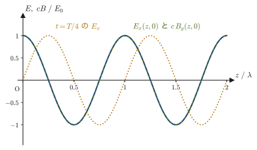
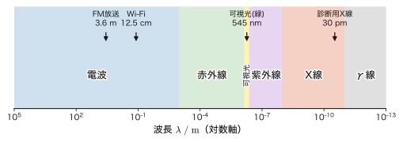
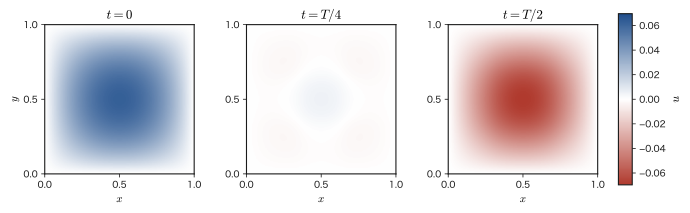

第42章マクスウェル方程式と電磁波
雷が光ってから音が聞こえるまでに数秒の遅れがあるのは，光の速さが音の速さよりはるかに大きいからである．では，光とはそもそも何なのだろうか．第II部では，波の一般的な性質（重ね合わせ，干渉，反射・屈折）を弦や音波を題材に学び，第13章・第14章では，光も波として振る舞い，その速さ $c$ が有限で測定できることを見た．第14章14.6節では「光は電磁波である」と紹介したが，その理由はまだ示していなかった．本章は，電気と磁気の法則だけから出発して，その理由——光の正体である電磁波——に到達する章である．
道筋は3つの段階からなる．(1) 第35章から第41章までに導いた法則をそのまま並べると，電荷保存則（連続の方程式，第37章37.2節）と矛盾する箇所が一つだけ残る．今日の教科書では，コンデンサーを含む回路でアンペールの法則が破綻することからこの矛盾を説明し，変位電流（displacement current）という項を加えることで，4つのマクスウェル方程式（Maxwell's equations）を完成させる．(2) 真空中の4つの方程式から，電場が波動方程式を満たすことを一行も飛ばさずに導くと，波の速さは $c=1/\sqrt{\varepsilon_0\mu_0}$ という，電気と磁気の定数だけで決まる量になり，その値は光速の実測値に一致する．(3) 電磁波が横波であること，エネルギーを運ぶこと（ポインティング・ベクトル），波長によって電波・可視光・X線などに分類されることを調べ，第V部全体を振り返る．なお，電場・磁場は観測者の運動状態によって姿を変えることが後に明らかになり（第58章で学ぶ電磁気学の4元的な定式化），本章は第VIII部の特殊相対性理論への自然な入り口にもなっている．
- コンデンサーを含む回路でアンペールの法則が矛盾を起こすことを具体的に確かめ，電荷保存則（連続の方程式）と整合するように変位電流 $\pdiff{\bm D}{t}$ を導入してアンペール＝マクスウェルの法則 $\rot\bm H=\bm j+\pdiff{\bm D}{t}$ を完成させる
- 4つのマクスウェル方程式（積分形・微分形）を一望し，それぞれが電磁気学のどの実験事実に対応するかを整理する
- ベクトル場に作用するラプラシアン $\nabla^2\bm E$ の意味を確認したうえで，真空中のマクスウェル方程式とベクトル恒等式 $\rot(\rot\bm E)=\grad(\operatorname{div}\bm E)-\nabla^2\bm E$ から，電場の波動方程式 $\nabla^2\bm E=\dfrac{1}{c^2}\pdiff{^2\bm E}{t^2}$（$c=1/\sqrt{\varepsilon_0\mu_0}$）を一行も飛ばさずに導く
- 平面電磁波の解を調べ，電場・磁場・伝搬方向が互いに直交すること（$\bm E\perp\bm B\perp\bm k$，電磁波が横波であること）と，$E=cB$ という関係を導く
- 電磁場が運ぶエネルギーの密度と，そのエネルギーが空間を流れる向き・速さを表すポインティング・ベクトルを導入し，エネルギー保存の式（ポインティングの定理）を導く
- 電磁波が波長（振動数）によって電波・可視光・X線などに分類される（電磁波のスペクトル）ことを理解し，2次元の波動方程式を境界条件付きで解き切る例題を通じて，導波管や空胴共振器の考え方に触れる
もとにしたノート：望月泰英『物理学ノート 電磁気学』 pp. 31–32．
42.1 変位電流とアンペール＝マクスウェルの法則
第38章38.5節で学んだアンペールの法則は，電流 $\bm j$ のまわりにできる磁場 $\bm H$ について，微分形で
$$ \rot\bm H=\bm j $$と書けるのだった（積分形は $\oint_C\bm H\cdot\dd\bm\ell=I_{\text{貫}}$，閉曲線 $C$ を貫く電流の合計に等しい）．この法則は，直線電流やソレノイドのような定常電流（時間的に変化しない電流）に対しては正しく，実験ともよく合う．しかし，コンデンサーを含む回路のように，電流が時間とともに変化する状況を考えると，この法則には見過ごせない矛盾が潜んでいることに気づく．
（この章には，電場 $\bm E$・磁束密度 $\bm B$ のほかに，電束密度 $\bm D$・磁場 $\bm H$ も現れる．真空中では $\bm D=\varepsilon_0\bm E$，$\bm B=\mu_0\bm H$ なので，$\bm D,\bm H$ は $\bm E,\bm B$ の定数倍にすぎないと読んでよい．物質中での違いは第41章で学んだ．）
図42.1のように，コンデンサーを一定電流 $I$ で充電している回路を考え，導線を1周する閉曲線 $C$ をとる．アンペールの法則の積分形 $\oint_C\bm H\cdot\dd\bm\ell=I_{\text{貫}}$ は，$C$ を境界にもつ曲面ならどれを選んでも同じ答えになるはずという前提のもとに成り立つ法則である（$C$ は固定されているが，それを境界とする曲面の選び方は無数にある）．ところが，
- (a) 導線を真横に貫く平らな面 $S_1$ を選べば，$S_1$ を貫く電流はそのまま導線の電流 $I$ であり，$I_{\text{貫}}=I$．
- (b) 導線を避けて極板の間を通り抜ける，風船のように膨らんだ面 $S_2$ を選べば，$S_2$ を貫く導線は無い（極板の間には導線が存在しない）ので $I_{\text{貫}}=0$．
となってしまう．同じ閉曲線 $C$ を使っているのに，曲面の選び方によって答えが $I$ になったり $0$ になったりするのでは，法則として矛盾している．この矛盾は，$S_2$ が「導線ではなく，時間とともに強くなっていく電場」を貫いていることに注目すると解決の糸口が見える——おそらくそこには，導線の電流 $I$ と同じ役割を果たす，何か別の「電流のようなもの」が存在するはずである．
導出：連続の方程式との矛盾から変位電流の必要性を示す
図42.1の直感的な議論を，微分形を使ってもっと厳密に確かめよう．もしアンペールの法則が常に $\rot\bm H=\bm j$ という形のままだとすると，両辺の発散（divergence）をとって，
$$ \operatorname{div}(\rot\bm H)=\operatorname{div}\bm j $$が成り立たなければならない．ところが，左辺は任意のベクトル場 $\bm H$ について恒等的に $0$ になる（大学数学 第19章 定理19.1：「回転には発散が無い」，$\operatorname{div}(\rot\bm f)=0$）．したがって，$\rot\bm H=\bm j$ という式が成り立つならば，
$$ \operatorname{div}\bm j=0 $$が常に成り立たなければならないことになる．一方，電荷保存則（連続の方程式，第37章37.2節）は
$$ \operatorname{div}\bm j=-\pdiff{\rho}{t} $$であった．この2つを比べると，$\rot\bm H=\bm j$ が矛盾なく成り立つのは $\pdiff{\rho}{t}=0$，つまりどの点でも電荷密度が時間変化しない場合に限ることが分かる．これはまさに，アンペールの法則がもともと定常電流（電流も電荷分布も時間変化しない状況）に対して導かれた法則だったことと一致する．しかし，図42.1のようにコンデンサーの極板に電荷がたまっていく状況では，極板の表面で $\pdiff{\rho}{t}\neq0$ であり，$\rot\bm H=\bm j$ をそのまま使うことはできない．
そこで，右辺に何か別の項 $\bm X$ を付け加えて $\rot\bm H=\bm j+\bm X$ という形にし，発散をとったときに矛盾なく $0=0$ となるようにしたい．
$$ \operatorname{div}(\rot\bm H)=0=\operatorname{div}\bm j+\operatorname{div}\bm X \qquad\therefore\ \operatorname{div}\bm X=-\operatorname{div}\bm j=\pdiff{\rho}{t} $$ここでガウスの法則（第35章35.4節）$\operatorname{div}\bm D=\rho$ を思い出そう．両辺を時間で微分すると（空間微分の発散と時間微分は独立な変数についての演算なので順序を交換できる），
$$ \operatorname{div}\left(\pdiff{\bm D}{t}\right)=\pdiff{\rho}{t} $$となり，これはまさに $\bm X=\pdiff{\bm D}{t}$ とおけばよいことを意味している．すなわち，
\begin{equation} \rot\bm H=\bm j+\pdiff{\bm D}{t} \label{eq:42-ampere-maxwell} \end{equation}という形に修正すれば，発散をとったときに恒等的に $0=0$ となり，電荷保存則と矛盾しなくなる．これが，マクスウェルが行った修正である．
（導出終わり）
定義42.1 変位電流密度
式 \eqref{eq:42-ampere-maxwell} の右辺に現れる $\pdiff{\bm D}{t}\ [\mathrm{A/m^2}]$（電束密度 $\bm D$ の時間変化率）を変位電流密度（displacement current density）と呼ぶ．これは，導線の中を実際に電荷が移動する伝導電流 $\bm j$ とは違って，電荷そのものは動いていない（真空中でも $\bm D=\varepsilon_0\bm E$ が時間変化するだけで生じる）．しかし，磁場を作るはたらきに関しては，通常の電流と全く同じ役割を果たす——これが「変位電流」という一見奇妙な名前の意味である．面 $S$ を貫く変位電流（電流そのもの，単位 $\mathrm A$）は $\displaystyle I_{\mathrm d}=\iint_S\pdiff{\bm D}{t}\cdot\dd\bm S$ である．
なぜ「変位」電流と呼ぶのか
誘電体の中では $\bm D=\varepsilon_0\bm E+\bm P$（$\bm P$ は分極，第41章）なので，
$$ \pdiff{\bm D}{t}=\varepsilon_0\pdiff{\bm E}{t}+\pdiff{\bm P}{t} $$と分けられる．第2項 $\pdiff{\bm P}{t}$ は，分極（束縛された正負の電荷が，つり合いの位置から少しだけ変位（ずれること））が時間変化するときに実際に動く電荷による電流であり，本物の電荷の動きである．真空中には第1項 $\varepsilon_0\pdiff{\bm E}{t}$ だけが残り，動く電荷が無いのに，磁場をつくるはたらきは同じである．「変位」の名は，この誘電体中の電荷の変位に由来する．電荷の動きが無いところにまで電流のはたらきを認めるこの大胆な拡張が正しいことは，これを含む方程式が電磁波の存在を予言し（42.3節），それが実験で確かめられたこと（42.3節の「歴史」）によって示された．
法則42.1 アンペール＝マクスウェルの法則
磁場 $\bm H$ は，伝導電流密度 $\bm j$ と変位電流密度 $\pdiff{\bm D}{t}$ の和を「渦の源」として生じる．
積分形： $\displaystyle\oint_C\bm H\cdot\dd\bm\ell=\iint_S\left(\bm j+\pdiff{\bm D}{t}\right)\cdot\dd\bm S$（$S$ は $C$ を境界にもつ任意の曲面）
微分形： $\displaystyle\rot\bm H=\bm j+\pdiff{\bm D}{t}$
図42.1の面 $S_2$ について確かめると，$S_2$ を貫く伝導電流は $0$ だが，コンデンサーの極板間の電場は充電が進むにつれて強くなっていくので $\pdiff{\bm D}{t}\neq0$ であり，$S_2$ を貫く変位電流がちょうど導線の電流 $I$ に等しくなる（例題42.1で数値的に確かめる）．こうして，面 $S_1$ と面 $S_2$ のどちらを選んでも同じ答え $I$ が得られるようになり，矛盾は解消される．
例題42.1 変位電流の必要性と，その大きさ
(a) 図42.1の状況で，もとのアンペールの法則 $\rot\bm H=\bm j$（変位電流を含まない形）を使うと何が矛盾するか，連続の方程式を使って説明せよ．(b) 面積 $A=4.0\times10^{-3}\ \mathrm{m^2}$ の平行平板コンデンサーを，一定の電流 $I=3.0\ \mathrm A$ で（時刻 $t=0$ に電荷 $0$ から）充電しているとき，極板間の変位電流 $I_{\mathrm d}$ を求め，導線の伝導電流 $I$ と一致することを確かめよ（極板間は真空とし，端の効果は無視する）．
解答 (a) もとの法則 $\rot\bm H=\bm j$ の両辺の発散をとると，左辺は恒等式 $\operatorname{div}(\rot\bm H)=0$（大学数学第19章定理19.1）より常に $0$ になるので，$\operatorname{div}\bm j=0$ が要求される．しかし，コンデンサーの極板には電荷がたまっていくので，極板の表面では電荷密度 $\rho$ が時間とともに変化しており，連続の方程式 $\operatorname{div}\bm j=-\pdiff{\rho}{t}$（第37章37.2節）より $\operatorname{div}\bm j\neq0$ となる．$\operatorname{div}\bm j=0$（もとの法則が要求すること）と $\operatorname{div}\bm j\neq0$（電荷保存則が要求すること）は両立しないので，もとの法則は変位電流を含む形に修正しなければならない．
(b) 極板の電荷は一定電流で充電されているので，時刻 $t$ での電荷は $Q(t)=It$（$t=0$ で $Q=0$）である．端の効果を無視すれば，極板間の電場の大きさは平行平板コンデンサーの公式（第36章36.6節）より $E(t)=\dfrac{\sigma}{\varepsilon_0}=\dfrac{Q(t)}{A\varepsilon_0}=\dfrac{It}{A\varepsilon_0}$ である．したがって，
$$ \pdiff{E}{t}=\frac{I}{A\varepsilon_0} $$であり，変位電流密度は $j_{\mathrm d}=\varepsilon_0\pdiff{E}{t}=\dfrac{I}{A}$，これに面積 $A$ を掛けた変位電流は
$$ I_{\mathrm d}=j_{\mathrm d}A=\varepsilon_0\pdiff{E}{t}\cdot A=\frac{I}{A}\cdot A=I $$となり，導線の伝導電流 $I$ と（式の上で）常に完全に一致することが分かる——これは，$Q=It$ から出発した時点で当然の結果である（コンデンサーにたまる電荷の増加率がそのまま充電電流なので）．具体的な数値では，$\pdiff E/\pdiff t=I/(A\varepsilon_0)=3.0/(4.0\times10^{-3}\times8.854\times10^{-12})\approx8.47\times10^{13}\ \mathrm{V/(m\cdot s)}$（電場がものすごい速さで強くなっている），$j_{\mathrm d}=I/A=3.0/(4.0\times10^{-3})=750\ \mathrm{A/m^2}$，$I_{\mathrm d}=750\times4.0\times10^{-3}=3.0\ \mathrm A=I$ である．
これで，面 $S_2$（極板間を通る面）を貫く「電流」も，面 $S_1$（導線を貫く面）を貫く電流 $I$ と正確に一致することが確かめられ，図42.1の矛盾は解消された．
例題42.2 変位電流がつくる磁場 — 円板コンデンサーの極板間
半径 $R=2.0\ \mathrm{cm}$ の円板状の極板をもつ平行平板コンデンサーを，一定の電流 $I=3.0\ \mathrm A$ で（時刻 $t=0$ に電荷 $0$ から）充電している（極板間は真空，端の効果は無視する）．(a) 極板の間の，軸（2枚の極板の中心を結ぶ直線）から距離 $r\ (\lt R)$ の点での磁場の大きさ $H(r)$ を求めよ．(b) $r=1.0\ \mathrm{cm}$ での $H$ と磁束密度 $B=\mu_0H$ を数値で求めよ．(c) $r=R$ の値が，コンデンサーの外の導線のまわりの磁場 $H=I/(2\pi r)$ の $r=R$ での値とつながることを確かめよ．
解答 (a) 極板の電荷は $Q=It$ なので，極板間の電束密度の大きさは $D=\sigma=\dfrac{Q}{\pi R^2}=\dfrac{It}{\pi R^2}$（端の効果を無視した一様な電場），その時間変化率は
$$ \pdiff Dt=\frac{I}{\pi R^2} $$で，$r$ によらない．対称性から，$\bm H$ は軸のまわりの円周方向を向き，軸から距離 $r$ の円周上で大きさが一定である．そこで，軸を中心とする半径 $r$ の円を閉曲線 $C$，それを境界とし極板に平行な円板を面 $S$ とする（$S$ は極板間にあるので伝導電流は貫かない）．アンペール＝マクスウェルの法則（法則42.1）の積分形
$$ \oint_C\bm H\cdot\dd\bm\ell=\iint_S\left(\bm j+\pdiff{\bm D}{t}\right)\cdot\dd\bm S $$で，左辺は $H\cdot2\pi r$，右辺は $\bm j=\bm0$ で $\pdiff{\bm D}{t}$ が面に垂直かつ一様なので $\dfrac{I}{\pi R^2}\cdot\pi r^2=\dfrac{Ir^2}{R^2}$ となる．よって $H\cdot2\pi r=Ir^2/R^2$，すなわち
$$ H(r)=\frac{I\,r}{2\pi R^2}\qquad(r\lt R) $$である（単位：$\mathrm{A\cdot m/m^2}=\mathrm{A/m}$ で $H$ の単位に一致）．磁場は軸からの距離に比例して大きくなる．
(b) $H(1.0\ \mathrm{cm})=\dfrac{3.0\times0.010}{2\pi\times(0.020)^2}=\dfrac{0.030}{2.513\times10^{-3}}\approx11.9\ \mathrm{A/m}$．$B=\mu_0H=1.2566\times10^{-6}\times11.94\approx1.5\times10^{-5}\ \mathrm T$（地磁気と同程度の大きさ）．
(c) $r=R$ では $H(R)=\dfrac{I}{2\pi R}=\dfrac{3.0}{2\pi\times0.020}\approx23.9\ \mathrm{A/m}$．一方，極板の外（$r\gt R$）では，面 $S$ を極板の外側まで広げると，$S$ は極板間の電場を（面積 $\pi R^2$ だけ）貫くので，貫く変位電流の合計は $\dfrac{I}{\pi R^2}\cdot\pi R^2=I$ になり，$H\cdot2\pi r=I$，すなわち $H=I/(2\pi r)$ となる．これは導線のまわりの磁場と同じ式で，$r=R$ で $I/(2\pi R)=23.9\ \mathrm{A/m}$ となり，極板間の式とちょうどつながる．つまり，極板間には，導線と同じ「電流 $I$」がつくるのと同じ磁場が，変位電流によって実際につくられる．
42.2 4つのマクスウェル方程式 — 電磁気学の完成
変位電流という最後のピースがそろったことで，電気と磁気に関するあらゆる現象を統一的に記述する4本の方程式——マクスウェル方程式（Maxwell's equations）——が完成する．これまでの章で個別に導いてきた法則を，ここで一度に一覧しよう．
| 名前 | 積分形 | 微分形 | 意味（一言で） |
|---|---|---|---|
| ① ガウスの法則 | $\displaystyle\oint_S\bm D\cdot\dd\bm S=Q_{\text{内}}$ | $\operatorname{div}\bm D=\rho$ | 電荷から電気力線が湧き出す |
| ② 磁場のガウスの法則 | $\displaystyle\oint_S\bm B\cdot\dd\bm S=0$ | $\operatorname{div}\bm B=0$ | 磁力線には湧き出し口（磁荷）が無い |
| ③ ファラデーの電磁誘導の法則 | $\displaystyle\oint_C\bm E\cdot\dd\bm\ell=-\dfrac{\dd}{\dd t}\displaystyle\iint_S\bm B\cdot\dd\bm S$ | $\rot\bm E=-\pdiff{\bm B}{t}$ | 磁束密度の時間変化が電場の渦を作る |
| ④ アンペール＝マクスウェルの法則 | $\displaystyle\oint_C\bm H\cdot\dd\bm\ell=\displaystyle\iint_S\left(\bm j+\pdiff{\bm D}{t}\right)\cdot\dd\bm S$ | $\rot\bm H=\bm j+\pdiff{\bm D}{t}$ | 電流と電束密度の時間変化が磁場の渦を作る |
（注：表の $\rho,\bm j$ は自由電荷の密度と伝導電流の密度である．物質中の分極電荷や磁化電流は $\bm D,\bm H$ の定義（$\bm D=\varepsilon_0\bm E+\bm P$，$\bm H=\bm B/\mu_0-\bm M$）の中に含まれている．）
法則42.2 マクスウェル方程式
電場 $\bm E$，電束密度 $\bm D$，磁束密度 $\bm B$，磁場 $\bm H$，電荷密度 $\rho$，電流密度 $\bm j$ は，表42.1の4本の方程式を満たす．これに，物質の性質を表す構成方程式（真空中では $\bm D=\varepsilon_0\bm E$，$\bm B=\mu_0\bm H$，第41章で見た誘電体・磁性体中ではそれぞれ分極・磁化を反映した関係式）を組み合わせれば，電気と磁気に関するあらゆる現象（静電場，静磁場，電磁誘導，そして本章で見る電磁波）を，原理的にはすべて計算できる．
積分形と微分形が同じ内容を表していることは，大学数学第20章で学んだ発散定理（ガウスの定理）とストークスの定理から従う：閉曲面 $S$ の面積分 $\oint_S\bm D\cdot\dd\bm S$ を，$S$ を境界面とする体積 $V$ 全体の $\operatorname{div}\bm D$ の体積積分に置き換える（発散定理）と①が，同じ置き換えを $\oint_S\bm B\cdot\dd\bm S$ に行うと②が，線積分 $\oint_C\bm E\cdot\dd\bm\ell$ を，$C$ を境界とする曲面 $S$ 全体の $\rot\bm E$ の面積分に置き換える（大学数学 第20章20.5節のストークスの定理）と③・④が，それぞれ対応する（③では曲面 $S$ が時間変化しないものとして，$\dd/\dd t$ を積分の外に出してよい）．どちらの形も等価であり，具体的な計算のしやすさに応じて使い分ければよい．
4本の方程式のうち，①（ガウスの法則）は第35章35.3節でクーロンの法則から導いた．③（ファラデーの法則）は第40章40.2節で導いた．④（アンペール＝マクスウェルの法則）は42.1節で導いた，もとのアンペールの法則（第38章38.5節）に変位電流を加えたものである．②（$\operatorname{div}\bm B=0$）は第38章38.5節で，磁力線がどこにも端をもたず必ず閉じているという事実から導いた．この事実の根拠は，孤立した磁極（磁気単極子，magnetic monopole）がこれまで実験で見つかっていないということである．つまり②は，電荷には正・負の単独の粒子があるのに，磁気にはそれが無いという自然の性質を表す式であり，これを基本法則として受け入れる．
イメージ：発散と回転の物理的な意味をもう一度
発散 $\operatorname{div}$（湧き出し・吸い込み）と回転 $\rot$（渦）の意味は，第35章35.5節と第40章40.2節で詳しく見た．表42.1の4本の方程式を，この言葉で読み直すと次のようになる．①「電荷があるところには電気力線の湧き出しがある」，②「磁力線には湧き出しが無い（必ず輪になる）」，③「磁束密度が時間変化すると，そのまわりに電場の渦ができる」，④「電流や，電束密度の時間変化（変位電流）があるところには，磁場の渦ができる」．③と④は，互いによく似た構造をしていることに気づくだろう——電場の渦の原因が磁場の時間変化，磁場の渦の原因が電流と電場（の時間変化）であり，このいわば「対称性に近い構造」こそが，42.3節で見るように電場と磁場が互いを生み出しながら空間を伝わっていく電磁波を可能にしている．
例題42.3 磁気単極子が存在しないことの意味
$\operatorname{div}\bm B=0$ という式は，物理的にどのようなことを意味しているか，$\operatorname{div}\bm D=\rho$（ガウスの法則）と対比しながら説明せよ．また，棒磁石を真っ二つに割ると何が起こるか，この法則から予想せよ．
解答 ガウスの法則 $\operatorname{div}\bm D=\rho$ は，電荷密度 $\rho$ という「電気力線の湧き出し口」があれば，そこから電気力線が湧き出す（$\rho\gt0$）か吸い込まれる（$\rho\lt0$）ことを意味する．正の電荷だけを取り出す（正電荷だけの物体を作る）ことは実際に可能であり，そのまわりには湧き出す一方の電気力線ができる（図42.2(a)）．これに対して $\operatorname{div}\bm B=0$ は，どんな点においても磁力線の正味の湧き出しが恒等的に $0$ であること，すなわち磁力線には湧き出し口（N極だけ，あるいはS極だけを取り出したもの＝磁気単極子）が存在しないことを意味する．磁力線は，図42.2(b)のように，必ずN極から出てS極へ戻る閉じたループを作るしかない．
棒磁石を真っ二つに割ると，直感的には「N極だけの破片」と「S極だけの破片」に分かれそうな気がするかもしれない．しかし $\operatorname{div}\bm B=0$ が正しい限り，そのようなことは起こり得ない．実際に棒磁石を割ってみると，それぞれの破片が新たにN極とS極の両方をもつ，より小さな棒磁石になるだけである——これを何度繰り返しても，片方の極だけを単独で取り出すことは決してできない．これは，電荷には正電荷単独の物体が存在するのに対し，磁荷（磁気単極子）は（少なくともこれまでの実験では）一度も見つかっていない，という電気と磁気の際立った非対称性を表している．
42.3 電磁波の波動方程式の導出
4本のマクスウェル方程式がそろったところで，いよいよ本章の中心的な問いに取り組む——電荷も電流も無い，何も無い空間（真空）の中で，電場や磁場はどのようにふるまうことができるだろうか．一見すると，電荷も電流も無ければ何も起こらない（$\bm E=\bm B=\bm 0$）だけのように思えるかもしれないが，実際には，表42.1の③・④式が電場と磁場を結びつけているため，そうとは限らない．
真空中（電荷密度 $\rho=0$，電流密度 $\bm j=\bm 0$）では，構成方程式 $\bm D=\varepsilon_0\bm E$，$\bm B=\mu_0\bm H$ を使うと，表42.1の4本の方程式は次のように書き直せる．たとえば①は $\operatorname{div}\bm D=\rho=0$ となるが，$\varepsilon_0$ は0でない定数だから $\operatorname{div}\bm D=\varepsilon_0\operatorname{div}\bm E=0$ すなわち $\operatorname{div}\bm E=0$ である．②は $\operatorname{div}\bm B=\mu_0\operatorname{div}\bm H=0$ より $\operatorname{div}\bm H=0$ でもある．③は $\rot\bm E=-\pdiff{\bm B}{t}$ のまま，④は $\bm j=\bm 0$ を入れて $\rot\bm H=\pdiff{\bm D}{t}$ となる．
$$ \operatorname{div}\bm E=0,\qquad \operatorname{div}\bm B=0,\qquad \rot\bm E=-\pdiff{\bm B}{t},\qquad \rot\bm H=\pdiff{\bm D}{t} $$目標は，この4本の連立方程式から磁場 $\bm H$（または $\bm B$）を消去して，電場 $\bm E$ だけが満たす方程式を作ることである．途中で，ベクトル場に作用するラプラシアン $\nabla^2\bm E$ が登場するので，その読み方を次の「数学の道具」の冒頭で確認しておく．
数学の道具：ベクトル場のラプラシアンと恒等式 $\rot(\rot\bm f)=\grad(\operatorname{div}\bm f)-\nabla^2\bm f$
ベクトル場のラプラシアン．ラプラシアン（大学数学 第19章19.3節）は $\nabla^2=\dfrac{\partial^2}{\partial x^2}+\dfrac{\partial^2}{\partial y^2}+\dfrac{\partial^2}{\partial z^2}$ で，第19章ではスカラー場 $f$ に作用させた $\nabla^2f$ を学んだ．ベクトル場 $\bm f=[f,g,h]$ に作用させるときは，成分ごとに作用させると約束する：
$$ \nabla^2\bm f=\left[\nabla^2f,\ \nabla^2g,\ \nabla^2h\right] $$したがって，電場についての式 $\nabla^2\bm E=\dfrac{1}{c^2}\pdiff{^2\bm E}{t^2}$ は，3つの成分 $E_x,E_y,E_z$ のそれぞれが同じ形のスカラーの波動方程式を満たす，という意味である．
恒等式．大学数学第19章では，発散・勾配・回転を組み合わせた恒等式として $\operatorname{div}(\rot\bm f)=0$ と $\rot(\grad\varphi)=\bm 0$ の2つを学んだ．回転をもう一度回転にかけた $\rot(\rot\bm f)$ をふくむ恒等式は，電磁気学のベクトル恒等式として現れるが，大学数学では扱わないと断ってあった（第19章19.3節の注意）．ここで，本書で実際に必要になったこの機会に，その証明を行っておこう．
$\bm f=[f,g,h]$（成分はすべて $x,y,z$ の関数）とする．回転の定義（大学数学第19章）より $\rot\bm f=\left[\pdiff hy-\pdiff gz,\ \pdiff fz-\pdiff hx,\ \pdiff gx-\pdiff fy\right]$ である．これにもう一度回転を施すと，第1成分は
$$ \bigl[\rot(\rot\bm f)\bigr]_x =\pdiff{}{y}\left(\pdiff gx-\pdiff fy\right)-\pdiff{}{z}\left(\pdiff fz-\pdiff hx\right) =\frac{\partial^2g}{\partial x\partial y}-\frac{\partial^2f}{\partial y^2}-\frac{\partial^2f}{\partial z^2}+\frac{\partial^2h}{\partial x\partial z} $$となる（偏微分の順序交換，シュワルツの定理，大学数学第6章6.3節，はすでに何度も使ってきた）．ここで，$\dfrac{\partial^2f}{\partial x^2}$ を引いて足す（$0$ を加える）という小さな技巧を使うと，
$$ =\underbrace{\frac{\partial^2f}{\partial x^2}+\frac{\partial^2g}{\partial x\partial y}+\frac{\partial^2h}{\partial x\partial z}}_{=\ \pdiff{}{x}\left(\pdiff fx+\pdiff gy+\pdiff hz\right)=\pdiff{}{x}(\operatorname{div}\bm f)} \ -\ \underbrace{\left(\frac{\partial^2f}{\partial x^2}+\frac{\partial^2f}{\partial y^2}+\frac{\partial^2f}{\partial z^2}\right)}_{=\ \nabla^2f} $$と書き直せる．前半の3項は，$x$ について偏微分する前に $\operatorname{div}\bm f=\pdiff fx+\pdiff gy+\pdiff hz$ という和を作っておいたものにほかならないので，$\pdiff{}{x}(\operatorname{div}\bm f)=\bigl[\grad(\operatorname{div}\bm f)\bigr]_x$ である．後半は，$f$ の2階偏微分の和，すなわちラプラシアン $\nabla^2f=\bigl[\nabla^2\bm f\bigr]_x$ そのものである．したがって，
$$ \bigl[\rot(\rot\bm f)\bigr]_x=\bigl[\grad(\operatorname{div}\bm f)\bigr]_x-\bigl[\nabla^2\bm f\bigr]_x $$が得られる．$y$ 成分・$z$ 成分についても，$x\to y\to z\to x$ と文字を巡回的に入れ替えるだけで全く同様の計算になるので（演習42.2で $y$ 成分を実際に計算する），成分ごとに次の恒等式が成り立つ．
\begin{equation} \rot(\rot\bm f)=\grad(\operatorname{div}\bm f)-\nabla^2\bm f \label{eq:42-vecid} \end{equation}型の確認．左辺 $\rot(\rot\bm f)$ はベクトルなので，右辺の各項もベクトルでなければならない．右辺第1項は $\operatorname{div}\bm f$（スカラー）そのものではなく，その勾配 $\grad(\operatorname{div}\bm f)$（ベクトル）である．$\operatorname{div}\bm f$ はスカラーなので，ベクトルである $\nabla^2\bm f$ にそのまま足すことはできず，必ず勾配をとった形で現れる．
導出：真空中の電場の波動方程式
式\eqref{eq:42-vecid}で $\bm f=\bm E$ とおくと，
$$ \rot(\rot\bm E)=\grad(\operatorname{div}\bm E)-\nabla^2\bm E $$である．真空中では $\operatorname{div}\bm E=0$ であったから，右辺第1項は $\grad(0)=\bm 0$ となって消え，
\begin{equation} \rot(\rot\bm E)=-\nabla^2\bm E \label{eq:42-step1} \end{equation}という簡単な形になる．一方，左辺の $\rot\bm E$ にはファラデーの法則が使えて，$\rot\bm E=-\pdiff{\bm B}{t}=-\mu_0\pdiff{\bm H}{t}$（$\bm B=\mu_0\bm H$ を代入した）である．したがって式\eqref{eq:42-step1}の左辺は
$$ \rot(\rot\bm E)=\rot\left(-\mu_0\pdiff{\bm H}{t}\right) $$と書き直せる．$\mu_0$ は定数（場所にも時間にもよらない）なので $\rot$（空間についての微分演算）の外に出せる．さらに，空間についての微分 $\rot$ と時間についての微分 $\pdiff{}{t}$ は，互いに独立な変数についての偏微分なので，順序を交換してよい（シュワルツの定理と同じ発想）．よって，
$$ \rot\left(-\mu_0\pdiff{\bm H}{t}\right)=-\mu_0\pdiff{}{t}(\rot\bm H) $$となる．ここに，アンペール＝マクスウェルの法則（真空中の形）$\rot\bm H=\pdiff{\bm D}{t}=\varepsilon_0\pdiff{\bm E}{t}$（$\bm D=\varepsilon_0\bm E$ を代入した）を代入すると，
$$ -\mu_0\pdiff{}{t}(\rot\bm H)=-\mu_0\pdiff{}{t}\left(\varepsilon_0\pdiff{\bm E}{t}\right)=-\varepsilon_0\mu_0\frac{\partial^2\bm E}{\partial t^2} $$が得られる（$\varepsilon_0,\mu_0$ とも定数なので，$\pdiff{}{t}$ の外に出したまま2回微分の形にまとめた）．以上をまとめると，式\eqref{eq:42-step1}の左辺 $\rot(\rot\bm E)$ は $-\varepsilon_0\mu_0\dfrac{\partial^2\bm E}{\partial t^2}$ に等しいことが分かったので，式\eqref{eq:42-step1}は
$$ -\nabla^2\bm E=-\varepsilon_0\mu_0\frac{\partial^2\bm E}{\partial t^2} $$となる．両辺に $-1$ を掛けて整理すると，
\begin{equation} \nabla^2\bm E=\varepsilon_0\mu_0\frac{\partial^2\bm E}{\partial t^2} \label{eq:42-wave-E} \end{equation}が得られる．最後に，$\dfrac{1}{\sqrt{\varepsilon_0\mu_0}}$ は速さの次元をもつ量なので（単位の確認は例題42.5で行う），これを $c\equiv\dfrac{1}{\sqrt{\varepsilon_0\mu_0}}$（すなわち $\varepsilon_0\mu_0=1/c^2$）とおく．この $c$ が実際に測られている光速に一致することが，「光は電磁波である」ことの根拠になる（数値の確認は例題42.5）．すると，最終的に
\begin{equation} \nabla^2\bm E=\frac{1}{c^2}\frac{\partial^2\bm E}{\partial t^2} \label{eq:42-wave-c} \end{equation}という，電場 $\bm E$ についての波動方程式（wave equation）が得られる．
（導出終わり）
定理42.1 電磁波の波動方程式
真空中では，電場 $\bm E$ は式\eqref{eq:42-wave-c}の波動方程式 $\nabla^2\bm E=\dfrac{1}{c^2}\pdiff{^2\bm E}{t^2}$（$c=1/\sqrt{\varepsilon_0\mu_0}$）を満たす．$\bm E$ が1次元的にしか変化しない場合（たとえば $\bm E$ が $x$ だけの関数）は $\nabla^2=\pdiff{^2}{x^2}$ となるので，
$$ \frac{\partial^2\bm E}{\partial x^2}=\frac{1}{c^2}\frac{\partial^2\bm E}{\partial t^2} $$という，見慣れた1次元の波動方程式になる（大学数学 第43章43.1節では，同じ導出を数学の立場から追い，43.2節では弦の振動として導いた．それと同じ形である）．$\bm E$ が2次元的に変化する場合（$x,y$ の関数）は $\nabla^2=\pdiff{^2}{x^2}+\pdiff{^2}{y^2}$ となるので，
$$ \pdiff{^2\bm E}{x^2}+\pdiff{^2\bm E}{y^2}=\frac{1}{c^2}\frac{\partial^2\bm E}{\partial t^2} $$となる（42.7節で，この2次元の場合を境界条件・初期条件付きで具体的に解く）．
考察：解は速さ $c$ で進む波であり，電磁波は横波である
(1) 速さ $c$ の根拠．1次元の波動方程式の解として，波形 $f$ をもつ $E_y=f(x-ct)$ を考える．合成関数の微分より $\pdiff{E_y}{x}=f'(x-ct)$，$\pdiff{^2E_y}{x^2}=f''(x-ct)$，$\pdiff{E_y}{t}=-cf'(x-ct)$，$\pdiff{^2E_y}{t^2}=c^2f''(x-ct)$ なので，$\pdiff{^2E_y}{x^2}=\dfrac1{c^2}\pdiff{^2E_y}{t^2}$ が成り立つ．この解は，$x-ct$ が一定の点（波形の同じ部分）が $x=ct+\text{定数}$ で動くので，波形を崩さずに $+x$ 向きへ速さ $c$ で進む波である．同様に $f(x+ct)$ は $-x$ 向きに進む．
(2) 横波であること．$\bm E$ が $x$ だけの関数（$x$ 方向に進む波）のとき，真空中の $\operatorname{div}\bm E=0$ は $\pdiff{E_x}{x}=0$ となる．すなわち $E_x$ は $x$ によらず，波として伝わることはない（一様に存在するだけの成分で，波の一部ではない）．波として伝わるのは $E_y,E_z$，つまり進行方向に垂直な成分だけであり，これが電磁波が横波である理由である（42.4節で詳しく調べる）．
考察：物質中の光速 — $c$ は「媒質中での光の速さ」になる
式\eqref{eq:42-wave-c}の定数 $1/c^2$ は，導出の途中では $\varepsilon_0\mu_0$ であった．もし電磁波が真空ではなく，一様な誘電体（誘電率 $\varepsilon$）・磁性体（透磁率 $\mu$）の中を伝わるなら，構成方程式は $\bm D=\varepsilon\bm E$，$\bm B=\mu\bm H$ に変わるだけで，導出の手順は一字も変わらない（第41章で見たとおり，物質の効果は $\varepsilon_0,\mu_0$ を $\varepsilon,\mu$ に置き換えることに含まれる）．したがって波の速さは
$$ v=\frac{1}{\sqrt{\varepsilon\mu}}=\frac{1}{\sqrt{\varepsilon_0\mu_0}}\cdot\frac{1}{\sqrt{\varepsilon_{\mathrm r}\mu_{\mathrm r}}}=\frac{c}{n},\qquad n=\sqrt{\varepsilon_{\mathrm r}\mu_{\mathrm r}} $$となる（$\varepsilon_{\mathrm r}=\varepsilon/\varepsilon_0$，$\mu_{\mathrm r}=\mu/\mu_0$ は比誘電率・比透磁率）．$n$ は第13章13.3節で導入した絶対屈折率にほかならない．ガラスや水の中で光が遅くなる（$n\gt1$）ことは，「物質中では $\varepsilon\gt\varepsilon_0$ となる」という電磁気の性質から説明されるのである（光としての取り扱いは第14章14.6節）．本章では以後，特に断らない限り真空を考え，$c=1/\sqrt{\varepsilon_0\mu_0}$ を使う．また，波動方程式の右辺の定数が「波の速さの2乗の逆数」であることは，第II部で見た弦の波の方程式（第11章11.2節）と全く同じである．
注意：$\varepsilon_{\mathrm r}$ は光の振動数での値
上の $n=\sqrt{\varepsilon_{\mathrm r}\mu_{\mathrm r}}$ に入れる $\varepsilon_{\mathrm r}$ は，光の振動数（$10^{14}\ \mathrm{Hz}$ 程度）での値であり，コンデンサーで測る静的な（ゆっくり変化する電場での）$\varepsilon_{\mathrm r}$ とは一般に異なる．たとえば水は，静的には $\varepsilon_{\mathrm r}\approx80$ だが，可視光では $n\approx1.33$ なので $\varepsilon_{\mathrm r}=n^2\approx1.8$（$\mu_{\mathrm r}\approx1$ とした）である．誘電率が電場の振動数によって変わることを分散（dispersion）という（第14章14.6節）．
例題42.4 磁場も同じ波動方程式を満たすことを示す
定理42.1の導出では電場 $\bm E$ を主役にしたが，磁場 $\bm H$（あるいは $\bm B$）についても，全く同じ形の波動方程式 $\nabla^2\bm H=\dfrac{1}{c^2}\pdiff{^2\bm H}{t^2}$ が成り立つことを示せ．
解答 真空中のマクスウェル方程式のうち，今度は $\rot\bm H=\pdiff{\bm D}{t}$ の両辺に $\rot$ を施すことから始める．
$$ \rot(\rot\bm H)=\rot\left(\pdiff{\bm D}{t}\right)=\varepsilon_0\pdiff{}{t}(\rot\bm E) $$（$\rot$ と $\pdiff{}{t}$ の順序を交換し，$\bm D=\varepsilon_0\bm E$ を代入した）．ここにファラデーの法則 $\rot\bm E=-\pdiff{\bm B}{t}=-\mu_0\pdiff{\bm H}{t}$ を代入すると，
$$ \varepsilon_0\pdiff{}{t}(\rot\bm E)=\varepsilon_0\pdiff{}{t}\left(-\mu_0\pdiff{\bm H}{t}\right)=-\varepsilon_0\mu_0\frac{\partial^2\bm H}{\partial t^2} $$となる．一方，恒等式\eqref{eq:42-vecid}を $\bm f=\bm H$ に適用すると $\rot(\rot\bm H)=\grad(\operatorname{div}\bm H)-\nabla^2\bm H$ であり，真空中では $\operatorname{div}\bm B=0$ すなわち $\operatorname{div}\bm H=0$（$\bm B=\mu_0\bm H$，$\mu_0\neq0$ より）なので，右辺第1項は消えて $\rot(\rot\bm H)=-\nabla^2\bm H$ となる．以上の2つの式を比べると，
$$ -\nabla^2\bm H=-\varepsilon_0\mu_0\frac{\partial^2\bm H}{\partial t^2} \qquad\therefore\ \nabla^2\bm H=\varepsilon_0\mu_0\frac{\partial^2\bm H}{\partial t^2}=\frac{1}{c^2}\frac{\partial^2\bm H}{\partial t^2} $$が得られる．電場を消去して磁場だけの方程式を作ったか（本問），磁場を消去して電場だけの方程式を作ったか（定理42.1の導出）という違いだけで，$\bm E$ と $\bm H$（あるいは $\bm B$）は全く対等な立場で同じ波動方程式に従う——マクスウェル方程式の③・④式（ファラデーの法則とアンペール＝マクスウェルの法則）が，電場と磁場に関してほぼ対称な構造をしていたことの帰結である．
例題42.5 $c=1/\sqrt{\varepsilon_0\mu_0}$ の数値検証 — 電気と磁気の定数から光速が出る
真空の誘電率 $\varepsilon_0=8.854\,187\,8128\times10^{-12}\ \mathrm{F/m}$ と透磁率 $\mu_0=1.256\,637\,062\,12\times10^{-6}\ \mathrm{N/A^2}$（ともにCODATA推奨値）から $c=1/\sqrt{\varepsilon_0\mu_0}$ を計算し，光速の定義値 $c=299\,792\,458\ \mathrm{m/s}$ とどの程度一致するか確かめよ．
解答 $\varepsilon_0\mu_0$ を計算すると，
$$ \varepsilon_0\mu_0=(8.854\,187\,8128\times10^{-12})\times(1.256\,637\,062\,12\times10^{-6})\approx1.112\,650\,056\times10^{-17}\ \mathrm{s^2/m^2} $$（単位の確認：$[\varepsilon_0]=\mathrm{F/m}=\mathrm{C^2\,s^2/(kg\,m^3)}$，$[\mu_0]=\mathrm{N/A^2}=\mathrm{kg\,m/C^2}$ なので，積の単位は $\mathrm{s^2/m^2}$——確かに $1/(\text{速さ})^2$ の次元になっている）．したがって，
$$ c=\frac{1}{\sqrt{\varepsilon_0\mu_0}}\approx\frac{1}{\sqrt{1.112\,650\,056\times10^{-17}}}\approx2.997\,924\,58\times10^{8}\ \mathrm{m/s} $$となり，光速の定義値 $299\,792\,458\ \mathrm{m/s}$ と，有効数字9桁まで完全に一致する（計算値との相対的なずれはおよそ $2\times10^{-14}$ で，これは上に書いた $\varepsilon_0,\mu_0$ の桁数を有限で打ち切ったことによる見かけのずれにすぎない．2019年のSI単位系の改定以降，$c$ は定義値として固定されており，$\varepsilon_0$ は $\varepsilon_0=1/(\mu_0c^2)$ で決まり，$\mu_0$ の方が（相対不確かさ $10^{-10}$ 程度で）実験的に決まる測定量になっている）．マクスウェルの時代には，現在の SI の $\varepsilon_0,\mu_0$ という定数はまだ無かったが，電荷の静電単位と電磁単位の換算比（現在の言葉では $1/\sqrt{\varepsilon_0\mu_0}$ にあたる速さ）が，ヴェーバーとコールラウシュによって電気と磁気の実験だけから測られていた（次の「歴史」を参照）．マクスウェルは，その値（約 $3.1\times10^8\ \mathrm{m/s}$）が当時知られていた光速の実測値に近いことに気づき，「光は電磁波の一種にちがいない」という結論に至った．電気と磁気という，一見光とは無関係に見える現象の測定値だけから，光の速さがぴたりと再現されるという事実は，何度考えても驚くべきことである．
歴史：光は電磁波である — 予言から実験へ
電気と磁気の測定から光速が現れることには，マクスウェルより前に手がかりがあった．1856年，ヴェーバー（Weber）とコールラウシュ（Kohlrausch）は，電荷の静電単位と電磁単位の換算比を測定し，それが約 $3.1\times10^8\ \mathrm{m/s}$ という速さの次元をもつ値になることを見いだした．マクスウェルはこの値が，フィゾー（Fizeau）らが測っていた光速（第13章13.6節）に近いことに注目し，1860年代に「光は電磁現象の一種である」という結論に至った．変位電流を含むマクスウェル方程式が完成したのは1860年代半ばであり，そこから電磁波の存在が理論的に予言された．この予言を実験で確かめたのはヘルツ（Hertz）で，1880年代後半（1887〜88年）に火花放電を使って電磁波を発生・検出し，それが光と同じ速さで進み，反射・屈折・偏光といった光の性質を示すことを実証した．マクスウェルはその実証を見ることなく1879年に亡くなっている．
42.4 平面電磁波の性質 — $\bm E\perp\bm B\perp\bm k$ と $E=cB$
波動方程式（定理42.1）を満たす関数はたくさんある（大学数学第43章で学んだとおり，波動方程式の一般解は変数分離法や，$x\mp ct$ の関数（ダランベールの解）など，いろいろな形に書ける）．ここでは，最も基本的で応用上も重要な解——空間のどの断面でも同じ位相をもつ平面波（plane wave）——を考える．平面波の進む向きは，波数ベクトル（wave vector）$\bm k$ で表す．$\bm k$ の向きが波の進む向き（伝搬方向），大きさが波数 $k=2\pi/\lambda$（$\lambda$ は波長）である．まず $\bm k=k\bm e_z$（$+z$ 方向に進む波）として，電場が $x$ 方向を向き，大きさが
\begin{equation} E_x(z,t)=E_0\cos(kz-\omega t) \label{eq:42-planewave-E} \end{equation}という形（$E_0$：振幅，$k=2\pi/\lambda$：波数，$\omega=2\pi f$：角振動数．大学数学第43章の例題43.1と同じ形の解であり，波の位相の向きの規約もそれに揃えている）で振動するものを仮定してみよう．すなわち $\bm E=[E_0\cos(kz-\omega t),\,0,\,0]$ である．（$z$ 方向に進む波では，$\operatorname{div}\bm E=0$ より $\pdiff{E_z}{z}=0$ となって $E_z$ は波として伝わらないので，電場の波は $x,y$ 成分だけをもつ．ここでは $y$ 成分も $0$，つまり電場が一つの向きだけに振動する場合を調べる．）
（第II部では，正弦波を $y=A\sin(\omega t-kx+\phi)$ の形で書いた（第11章11.4節）．余弦関数は偶関数で $\cos(kz-\omega t)=\cos(\omega t-kz)$ なので，式\eqref{eq:42-planewave-E}は，位相定数を $\phi=\pi/2$（$\cos\theta=\sin(\theta+\pi/2)$）としたときの第II部の形と全く同じ波であり，$+z$ 方向に進む．位相 $kz-\omega t$ が一定に保たれる点が $z=\omega t/k+\text{定数}$ で動くからである．）
導出：平面電磁波の磁場を求める
この $\bm E$ を，真空中のファラデーの法則 $\rot\bm E=-\pdiff{\bm B}{t}$ に代入して，対応する磁場 $\bm B$ を求めよう．$\bm E=[E_x,0,0]$（$E_x$ は $z,t$ だけの関数で，$x,y$ にはよらない）の回転を成分ごとに計算すると，
$$ \rot\bm E=\left[\pdiff{E_z}{y}-\pdiff{E_y}{z},\ \ \pdiff{E_x}{z}-\pdiff{E_z}{x},\ \ \pdiff{E_y}{x}-\pdiff{E_x}{y}\right] =\left[0,\ \ \pdiff{E_x}{z},\ \ 0\right] $$（$E_y=E_z=0$ で，$E_x$ は $x,y$ を含まないので $\pdiff{E_x}{y}=0$）．式\eqref{eq:42-planewave-E}を $z$ で偏微分すると $\pdiff{E_x}{z}=-kE_0\sin(kz-\omega t)$ なので，
$$ \rot\bm E=\bigl[0,\ -kE_0\sin(kz-\omega t),\ 0\bigr] $$となる．これが $-\pdiff{\bm B}{t}$ に等しい．まず $x$ 成分と $z$ 成分は $\pdiff{B_x}{t}=-(\rot\bm E)_x=0$，$\pdiff{B_z}{t}=-(\rot\bm E)_z=0$ なので，$B_x,B_z$ は時間変化しない一定値であり，波の一部ではない．波以外の余分な一定磁場は無いとして $B_x=B_z=0$ とおく．$y$ 成分だけが残り，$\bm B=[0,B_y,0]$ について，
$$ -\pdiff{B_y}{t}=-kE_0\sin(kz-\omega t) \qquad\therefore\ \pdiff{B_y}{t}=kE_0\sin(kz-\omega t) $$この両辺を $t$ で積分する．$u=kz-\omega t$ とおくと $\dd u=-\omega\,\dd t$ なので，$\displaystyle\int\sin(kz-\omega t)\,\dd t=\int\sin u\left(-\frac{\dd u}{\omega}\right)=\frac{\cos u}{\omega}+C=\frac{1}{\omega}\cos(kz-\omega t)+C$（$C$ は積分定数だが，波以外の余分な一定磁場は無いとして $C=0$ とする）．したがって，
$$ B_y=kE_0\cdot\frac{1}{\omega}\cos(kz-\omega t)=\frac{k}{\omega}E_0\cos(kz-\omega t) $$となる．最後に，波動方程式に式\eqref{eq:42-planewave-E}を直接代入して確かめると（$\pdiff{^2E_x}{z^2}=-k^2E_0\cos(kz-\omega t)$，$\pdiff{^2E_x}{t^2}=-\omega^2E_0\cos(kz-\omega t)$ をそのまま式\eqref{eq:42-wave-c}に代入する），$-k^2E_0\cos(\cdots)=\dfrac1{c^2}(-\omega^2E_0\cos(\cdots))$ より $k^2=\omega^2/c^2$，すなわち
\begin{equation} \omega=ck \label{eq:42-dispersion} \end{equation}（角振動数と波数は独立には選べず，波動方程式を満たすためにはこの関係——分散関係（dispersion relation）——が必要である）．式\eqref{eq:42-dispersion}を使うと $k/\omega=1/c$ なので，最終的に
\begin{equation} B_y(z,t)=\frac{E_0}{c}\cos(kz-\omega t) \label{eq:42-planewave-B} \end{equation}が得られる．
残りの方程式との整合確認．ここまでで使ったのはファラデーの法則と波動方程式だけである．真空中のもう一つの方程式 $\rot\bm H=\pdiff{\bm D}{t}$，すなわち $\rot\bm B=\mu_0\varepsilon_0\pdiff{\bm E}{t}=\dfrac{1}{c^2}\pdiff{\bm E}{t}$ も満たされることを確かめよう．$\bm B=[0,B_y,0]$ で $B_y$ は $z,t$ だけの関数だから，
$$ \rot\bm B=\left[\pdiff{B_z}{y}-\pdiff{B_y}{z},\ \pdiff{B_x}{z}-\pdiff{B_z}{x},\ \pdiff{B_y}{x}-\pdiff{B_x}{y}\right]=\left[-\pdiff{B_y}{z},\ 0,\ 0\right]=\left[\frac{kE_0}{c}\sin(kz-\omega t),\ 0,\ 0\right] $$である．一方，$\dfrac{1}{c^2}\pdiff{\bm E}{t}=\left[\dfrac{\omega E_0}{c^2}\sin(kz-\omega t),\ 0,\ 0\right]$ である．両者を等しいとおくと $\dfrac kc=\dfrac{\omega}{c^2}$，すなわち $\omega=ck$ となり，式\eqref{eq:42-dispersion}が再び得られる．こうして，変化する電場が磁場の渦をつくり（$\rot\bm B$），変化する磁場が電場の渦をつくる（$\rot\bm E$）ことで，電場と磁場が互いを生み出しながら $z$ 方向へ伝わっていくという電磁波の姿が，式のうえで確かめられた．また $\operatorname{div}\bm E=\pdiff{E_x}{x}=0$，$\operatorname{div}\bm B=\pdiff{B_y}{y}=0$ も成り立つので，真空中の4本のマクスウェル方程式がすべて満たされている．
（導出終わり）
式\eqref{eq:42-planewave-E}と式\eqref{eq:42-planewave-B}を見比べると，$E_x$ と $B_y$ は，$\cos(kz-\omega t)$ という全く同じ位相で振動している（山と谷が同じ場所・同じ時刻に来る，すなわち「同位相」である）．振幅の比は $E_0/B_0=E_0/(E_0/c)=c$ である．また，$\bm E$ は $x$ 方向，$\bm B$ は $y$ 方向，波が進む方向（$\bm k$ の向き，本問では $z$ 方向）はこの両方に垂直である．実際，$\bm e_x\times\bm e_y=\bm e_z$ なので，$\bm E\times\bm B$ はちょうど伝搬方向を向く．
一般の向きの平面波．進む向きを $z$ 方向に決めたのは計算を簡単にするためである．一般に，波数ベクトル $\bm k=[k_x,k_y,k_z]$ の向きに進む平面波を $\bm E=\bm E_0\cos\phi$（$\bm E_0$ は定ベクトル，位相 $\phi=\bm k\cdot\bm r-\omega t$，$\bm k\cdot\bm r=k_xx+k_yy+k_zz$）と書いて，マクスウェル方程式を使ってみよう．
- $\operatorname{div}\bm E=-(\bm k\cdot\bm E_0)\sin\phi$ で，真空中では $\operatorname{div}\bm E=0$ だから $\bm k\cdot\bm E_0=0$，すなわち $\bm E\perp\bm k$（横波）．
- $\rot(\bm E_0\cos\phi)=\grad(\cos\phi)\times\bm E_0=-\sin\phi\ \bm k\times\bm E_0$（$\grad\phi=\bm k$）．ファラデーの法則 $\rot\bm E=-\pdiff{\bm B}{t}$ より $\pdiff{\bm B}{t}=\sin\phi\ \bm k\times\bm E_0$．$\displaystyle\int\sin\phi\,\dd t=\dfrac{\cos\phi}{\omega}$ なので（一定の磁場は除く），
となる．$\bm B$ は $\bm k$ にも $\bm E$ にも垂直で，$\bm E\perp\bm k$ より大きさは $B=\dfrac{kE}{\omega}=\dfrac Ec$（$\omega=ck$）である．さらに，三重積の公式 $\bm a\times(\bm b\times\bm c)=\bm b(\bm a\cdot\bm c)-\bm c(\bm a\cdot\bm b)$ と $\bm E\cdot\bm k=0$ から $\bm E\times\bm B=\dfrac1\omega\bm E\times(\bm k\times\bm E)=\dfrac{E^2}{\omega}\bm k$ となり，その向きは $\bm k$ と一致する．以上が，次の定理42.2の一般的な根拠である．

定理42.2 平面電磁波の性質
真空中を波数ベクトル $\bm k$ の向きに伝わる平面電磁波は，次の性質をもつ．
- 電場 $\bm E$，磁場 $\bm B$，伝搬方向 $\bm k$ は，どの瞬間・どの場所でも互いに直交する（$\bm E\perp\bm B\perp\bm k$）．すなわち電磁波は横波である．
- $\bm E$ と $\bm B$ は同位相で振動し，大きさの比は光速 $c$ に等しい：$E=cB$．
- $\bm E\times\bm B$ の向きは，波の伝搬方向 $\bm k$ と一致する．
- 角振動数と波数の間には分散関係 $\omega=ck$（式\eqref{eq:42-dispersion}）が成り立つ．
例題42.6 逆向きに進む平面波の磁場
電場が $\bm E=[0,\,0,\,E_0\cos(kx+\omega t)]$（$z$ 方向を向き，位相が $kx+\omega t$ の平面波）で与えられている．(a) この波はどちら向きに進むか．(b) 真空中のファラデーの法則から対応する磁場 $\bm B$ を求めよ．(c) $\bm E\times\bm B$ の向きが (a) の進む向きと一致することを確かめよ．
解答 (a) 位相 $kx+\omega t$ が一定の点は，$x=-\dfrac{\omega}{k}t+\text{定数}$ で動く．よって波形は $-x$ 方向へ速さ $\omega/k$ で進む（式\eqref{eq:42-dispersion}より $\omega/k=c$）．波数ベクトルは $\bm k=-k\bm e_x$ の向きである．
(b) $\bm E=[0,0,E_z]$，$E_z=E_0\cos(kx+\omega t)$（$x,t$ だけの関数）の回転は，
$$ \rot\bm E=\left[\pdiff{E_z}{y}-\pdiff{E_y}{z},\ \pdiff{E_x}{z}-\pdiff{E_z}{x},\ \pdiff{E_y}{x}-\pdiff{E_x}{y}\right]=\left[0,\ -\pdiff{E_z}{x},\ 0\right]=\bigl[0,\ kE_0\sin(kx+\omega t),\ 0\bigr] $$である（$\pdiff{E_z}{x}=-kE_0\sin(kx+\omega t)$）．ファラデーの法則 $\rot\bm E=-\pdiff{\bm B}{t}$ から $\bm B=[0,B_y,0]$（$x,z$ 成分は $\pdiff{B}{t}=0$ で波の一部ではない）とおくと，
$$ \pdiff{B_y}{t}=-kE_0\sin(kx+\omega t) $$である．$t$ で積分すると，$\displaystyle\int\sin(kx+\omega t)\,\dd t=-\dfrac{1}{\omega}\cos(kx+\omega t)$（$u=kx+\omega t$ とおくと $\dd u=\omega\,\dd t$）より，一定の磁場を除いて
$$ B_y=\frac{k}{\omega}E_0\cos(kx+\omega t)=\frac{E_0}{c}\cos(kx+\omega t) $$となる（$k/\omega=1/c$）．すなわち $\bm B=\left[0,\ \dfrac{E_0}{c}\cos(kx+\omega t),\ 0\right]$ で，やはり $E=cB$ が成り立つ．
(c) $\bm E\times\bm B=[0,0,E_z]\times[0,B_y,0]=[\,0\cdot0-E_zB_y,\ E_z\cdot0-0\cdot0,\ 0\,]=\left[-\dfrac{E_0^2}{c}\cos^2(kx+\omega t),\ 0,\ 0\right]$（$\bm e_z\times\bm e_y=-\bm e_x$）で，常に $-x$ 向きである．これは (a) の進む向きと一致する．波が逆向きに進むと，$\bm E$ と $\bm B$ の向きの関係も，$\bm E\times\bm B$ が進む向きを向くように入れ替わることが分かる．
42.5 電磁場のエネルギーとポインティング・ベクトル
電磁波が空間を伝わっていくとき，そこにはエネルギーも運ばれている——日光が地表を暖め，電子レンジのマイクロ波が食品を温め，携帯電話の電波が情報を運ぶことができるのは，電磁波がエネルギーを運搬しているからにほかならない．このエネルギーがどれだけの密度で存在し，どちらの向きにどれだけの速さで流れているかを調べよう．
第36章36.6節では，平行平板コンデンサーのエネルギーを考察することで，電場そのものが空間にエネルギーを蓄えているという見方にたどり着き，電場のエネルギー密度の公式（公式36.6）
$$ u_E=\frac12\varepsilon_0E^2 $$を得た．全く同様の議論を，コイル（インダクター）に蓄えられるエネルギーについて行うと（第40章40.7節，公式40.3），磁場のエネルギー密度
$$ u_B=\frac{1}{2\mu_0}B^2 $$が得られる．電場と磁場は，どちらも独立にエネルギーを蓄えることができるので，両方が存在する一般の状況（電磁波はまさにその典型例である）では，2つの密度を単純に足し合わせればよい．
法則42.3 電磁場のエネルギー密度
電場 $\bm E$ と磁場 $\bm B$ が存在する空間には，単位体積あたり
\begin{equation} u=u_E+u_B=\frac12\varepsilon_0E^2+\frac{1}{2\mu_0}B^2 \label{eq:42-energy-density} \end{equation}のエネルギーが蓄えられている．
電磁波が伝わっていく先へ，このエネルギーがどのように運ばれていくかを考えよう．単位時間・単位面積あたりに運ばれるエネルギー（エネルギー流束密度，単位は $\mathrm{W/m^2}$）を表すベクトル場を求めるために，$\rot\bm E=-\pdiff{\bm B}{t}$ と $\rot\bm H=\bm j+\pdiff{\bm D}{t}$ の2つから，$\bm E,\bm H$ を組み合わせたベクトル $\bm E\times\bm H$ の発散を計算してみる（ベクトルの発散と外積の恒等式が必要になるので，先に証明しておく）．
数学の道具：ベクトル恒等式 $\operatorname{div}(\bm P\times\bm Q)=\bm Q\cdot(\rot\bm P)-\bm P\cdot(\rot\bm Q)$
$\bm P=[P_1,P_2,P_3]$，$\bm Q=[Q_1,Q_2,Q_3]$ を任意のベクトル場とする（磁束密度 $\bm B$ などと混同しないよう，文字を $P,Q$ とした）．外積の成分は $\bm P\times\bm Q=[P_2Q_3-P_3Q_2,\ P_3Q_1-P_1Q_3,\ P_1Q_2-P_2Q_1]$ であった（大学数学第15章）．これの発散を，積の微分公式 $\pdiff{}{x}(fg)=\pdiff fxg+f\pdiff gx$ を使って成分ごとに展開すると，
$$ \operatorname{div}(\bm P\times\bm Q)=\pdiff{}{x}(P_2Q_3-P_3Q_2)+\pdiff{}{y}(P_3Q_1-P_1Q_3)+\pdiff{}{z}(P_1Q_2-P_2Q_1) $$となる．これを右辺の6つの項に展開し，$Q_1,Q_2,Q_3$ が掛かっている項どうし，$P_1,P_2,P_3$ が掛かっている項どうしに整理し直すと，
$$ =Q_1\left(\pdiff{P_3}{y}-\pdiff{P_2}{z}\right)+Q_2\left(\pdiff{P_1}{z}-\pdiff{P_3}{x}\right)+Q_3\left(\pdiff{P_2}{x}-\pdiff{P_1}{y}\right) -\left[P_1\left(\pdiff{Q_3}{y}-\pdiff{Q_2}{z}\right)+P_2\left(\pdiff{Q_1}{z}-\pdiff{Q_3}{x}\right)+P_3\left(\pdiff{Q_2}{x}-\pdiff{Q_1}{y}\right)\right] $$となる（それぞれの偏微分の項がどちらのグループに属するかを1つずつ確認すればよい）．丸括弧の中身は，回転の定義（大学数学第19章）そのものなので，前半のまとまりは $\bm Q\cdot(\rot\bm P)$，後半のまとまりは $\bm P\cdot(\rot\bm Q)$ に等しい．したがって，
\begin{equation} \operatorname{div}(\bm P\times\bm Q)=\bm Q\cdot(\rot\bm P)-\bm P\cdot(\rot\bm Q) \label{eq:42-divcross} \end{equation}が成り立つ．
導出：電磁場のエネルギーの保存則（ポインティングの定理）
式\eqref{eq:42-divcross}で $\bm P=\bm E$，$\bm Q=\bm H$ とおくと，
$$ \operatorname{div}(\bm E\times\bm H)=\bm H\cdot(\rot\bm E)-\bm E\cdot(\rot\bm H) $$である．ここにマクスウェル方程式 $\rot\bm E=-\pdiff{\bm B}{t}$ と $\rot\bm H=\bm j+\pdiff{\bm D}{t}$ を代入すると，
$$ \operatorname{div}(\bm E\times\bm H)=-\bm H\cdot\pdiff{\bm B}{t}-\bm E\cdot\bm j-\bm E\cdot\pdiff{\bm D}{t} $$となる．真空中（線形な構成関係 $\bm D=\varepsilon_0\bm E$，$\bm B=\mu_0\bm H$）では，$\bm H\cdot\pdiff{\bm B}{t}=\mu_0\bm H\cdot\pdiff{\bm H}{t}=\pdiff{}{t}\left(\tfrac12\mu_0H^2\right)=\pdiff{}{t}\left(\tfrac{1}{2\mu_0}B^2\right)=\pdiff{u_B}{t}$（$\bm a\cdot\pdiff{\bm a}{t}=\tfrac12\pdiff{}{t}(a^2)$ という関係を使った——$\dfrac{\dd}{\dd t}\left(\tfrac12 a^2\right)=a\dfrac{\dd a}{\dd t}$ と同じ発想である），同様に $\bm E\cdot\pdiff{\bm D}{t}=\varepsilon_0\bm E\cdot\pdiff{\bm E}{t}=\pdiff{}{t}\left(\tfrac12\varepsilon_0E^2\right)=\pdiff{u_E}{t}$ となるので，
$$ \operatorname{div}(\bm E\times\bm H)=-\pdiff{u_B}{t}-\bm E\cdot\bm j-\pdiff{u_E}{t} $$すなわち，$u=u_E+u_B$（式\eqref{eq:42-energy-density}）を使って整理すると，
\begin{equation} \pdiff ut+\operatorname{div}(\bm E\times\bm H)=-\bm E\cdot\bm j \label{eq:42-poynting-theorem} \end{equation}という関係が得られる．右辺の $\bm E\cdot\bm j$ は，電場が電流（動く電荷）にする仕事の単位体積あたりの割合（第37章37.4節のジュール熱と同じ起源の量）であり，電流が流れている場所でエネルギーが電磁場から電荷へ受け渡される割合を表す．
（導出終わり）
電荷や電流の無い真空中（$\bm j=\bm 0$）では，式\eqref{eq:42-poynting-theorem}は，$\bm S\equiv\bm E\times\bm H$ とおいて
$$ \pdiff ut+\operatorname{div}\bm S=0 $$という形になる．これは，連続の方程式 $\pdiff{\rho}{t}+\operatorname{div}\bm j=0$（電荷の保存則）と全く同じ構造をしている——「密度の時間変化」と「流れの発散」の和が $0$ になるという式は，何かが保存されながら空間を流れていくことを表す式の一般形である．ここでは，保存されるのは電磁場のエネルギーであり，$\bm S$ がそのエネルギーの流れを表すベクトルだということになる．
定義42.2 ポインティング・ベクトル
$\displaystyle\bm S\equiv\bm E\times\bm H=\frac{1}{\mu_0}\bm E\times\bm B\ \ [\mathrm{W/m^2}]$ をポインティング・ベクトル（Poynting vector）と呼ぶ．$\bm S$ の向きはその点でのエネルギーの流れの向きを，大きさ $|\bm S|$ は単位時間に単位面積（流れに垂直な面）を通過するエネルギー（強度，intensity）を表す．単位は，$\mathrm{V/m}\times\mathrm{A/m}=\mathrm{W/m^2}$ である．
定理42.3 ポインティングの定理
電磁場のエネルギー密度 $u$（法則42.3）とポインティング・ベクトル $\bm S=\bm E\times\bm H$（定義42.2）について，次が成り立つ．
微分形： $\displaystyle\pdiff ut+\operatorname{div}\bm S=-\bm E\cdot\bm j$
積分形： $\displaystyle\frac{\dd}{\dd t}\iiint_Vu\,\dd V+\oint_{\partial V}\bm S\cdot\dd\bm S=-\iiint_V\bm E\cdot\bm j\,\dd V$（$V$ は空間に固定した任意の領域，$\partial V$ はその境界面）
積分形は，微分形を $V$ で体積積分し，発散定理 $\iiint_V\operatorname{div}\bm S\,\dd V=\oint_{\partial V}\bm S\cdot\dd\bm S$ を使えば得られる．意味は，「領域 $V$ にある電磁場のエネルギーの時間変化（第1項）と，境界面から外へ流れ出るエネルギー（第2項）の和は，電場が $V$ 内の電荷にする仕事（の符号を変えたもの）に等しい」——つまり，エネルギーは保存されている．
平面電磁波（42.4節）にこれを当てはめてみよう．$\bm E=[E_0\cos(kz-\omega t),0,0]$，$\bm B=[0,(E_0/c)\cos(kz-\omega t),0]$ だから，$\bm H=\bm B/\mu_0$ を使うと，
$$ \bm S=\bm E\times\bm H=\frac{1}{\mu_0}\bm E\times\bm B =\frac{1}{\mu_0}\bigl[E_0\cos(kz-\omega t),0,0\bigr]\times\left[0,\frac{E_0}{c}\cos(kz-\omega t),0\right] =\left[0,\,0,\,\frac{E_0^2}{\mu_0c}\cos^2(kz-\omega t)\right] $$となる（$\bm e_x\times\bm e_y=\bm e_z$）．$\bm S$ は常に $z$ 方向（波の伝搬方向）を向き，大きさは $\cos^2$ に比例して時間・場所とともに変動する．$\cos^2$ の時間平均は $1/2$ なので，時間平均の強度は
\begin{equation} \langle S\rangle=\frac{E_0^2}{2\mu_0c}=\frac12\varepsilon_0cE_0^2 \label{eq:42-intensity} \end{equation}となる（後半の等号は $1/(\mu_0c)=\varepsilon_0c$，すなわち $c^2=1/(\varepsilon_0\mu_0)$ を使って書き換えたもの）．また，このとき電場のエネルギー密度と磁場のエネルギー密度を比べると，$u_B=\dfrac{B^2}{2\mu_0}=\dfrac{(E/c)^2}{2\mu_0}=\dfrac{E^2}{2\mu_0c^2}=\dfrac{E^2}{2}\varepsilon_0=u_E$（$1/(\mu_0c^2)=\varepsilon_0$ を使った）となり，平面電磁波では，電場と磁場がエネルギーをちょうど半分ずつ担っていることが分かる（演習42.6で確かめる）．
例題42.7 太陽光を平面波とみなして，電場・磁場の振幅を求める
地球の大気圏外で太陽光に垂直な単位面積が受け取る平均の仕事率（太陽定数）は $S=1361\ \mathrm{W/m^2}$ である．太陽光を平面電磁波とみなして，(a) 電場の振幅 $E_0$，(b) 磁束密度の振幅 $B_0$ を求めよ．(c) そのときの電場のエネルギー密度と磁場のエネルギー密度の時間平均を比べよ．
解答 (a) 時間平均の強度の式\eqref{eq:42-intensity} $\langle S\rangle=\dfrac12\varepsilon_0cE_0^2$ を $E_0$ について解く．
$$ E_0=\sqrt{\frac{2\langle S\rangle}{\varepsilon_0c}}=\sqrt{\frac{2\times1361}{(8.854\times10^{-12})(2.998\times10^8)}}\ \mathrm{V/m}=\sqrt{\frac{2722}{2.654\times10^{-3}}}\ \mathrm{V/m}\approx1.01\times10^3\ \mathrm{V/m} $$（単位の確認：$\mathrm{W/m^2}\big/\bigl(\mathrm{F/m}\cdot\mathrm{m/s}\bigr)=\mathrm{V^2/m^2}$ となり，平方根で $\mathrm{V/m}$．）
(b) $E=cB$（定理42.2）より $B_0=\dfrac{E_0}{c}=\dfrac{1.01\times10^3}{2.998\times10^8}\ \mathrm T\approx3.4\times10^{-6}\ \mathrm T$．
(c) 時間平均では $\langle\cos^2\rangle=\dfrac12$ なので，$\langle u_E\rangle=\dfrac14\varepsilon_0E_0^2\approx2.27\times10^{-6}\ \mathrm{J/m^3}$，$\langle u_B\rangle=\dfrac{B_0^2}{4\mu_0}$ も同じ値になる（$u_B=u_E$）．
電場の振幅が約 $10^3\ \mathrm{V/m}$ もあるのに対し，磁束密度の振幅は $3.4\ \mu\mathrm T$ で，地磁気（$\sim3\times10^{-5}\ \mathrm T$）よりずっと小さく見える．しかしこれは $\mathrm{V/m}$ と $\mathrm T$ という単位の大きさの違いのためで，同じ単位にそろえて比べるべきなのは $E_0$ と $cB_0$ である．$cB_0=1.01\times10^3\ \mathrm{V/m}=E_0$ なので，電場と磁場は対等で，エネルギーも半分ずつを担っている．
例題42.8 導線に流れ込むエネルギーとジュール熱
半径 $a=1.0\ \mathrm{mm}$，長さ $\ell=1.0\ \mathrm m$ の円柱状の銅線（抵抗率 $1.7\times10^{-8}\ \Omega\,\mathrm m$）に，一定の電流 $I=10\ \mathrm A$ が流れている．(a) 導線の両端の電圧 $V$ と，導線の内部・表面での電場の大きさ $E$ を求めよ．(b) 導線の表面でのポインティング・ベクトルの向きと大きさ $S$ を求めよ．(c) $S$ に側面の面積をかけた，側面全体から流れ込むエネルギーの仕事率が，ジュール熱の発生率 $IV$ に一致することを示せ．
解答 (a) 抵抗は $R=\dfrac{(\text{抵抗率})\,\ell}{\pi a^2}=\dfrac{1.7\times10^{-8}\times1.0}{\pi\times(1.0\times10^{-3})^2}\approx5.41\times10^{-3}\ \Omega$，電圧は $V=IR\approx10\times5.41\times10^{-3}\approx5.41\times10^{-2}\ \mathrm V$．電場は導線の軸方向で一様なので $E=\dfrac{V}{\ell}\approx5.41\times10^{-2}\ \mathrm{V/m}$．導線の表面のすぐ外側でも，電場の接線成分は連続なので同じ値である（電場が表面に平行なので，第41章の境界条件のとおり接線成分が連続）．
(b) 導線の表面での磁場は，アンペールの法則（第38章）で，軸のまわりの半径 $a$ の円周について $H\cdot2\pi a=I$ より $H=\dfrac{I}{2\pi a}=\dfrac{10}{2\pi\times1.0\times10^{-3}}\approx1.59\times10^3\ \mathrm{A/m}$，向きは軸のまわり（円周方向）である．軸方向の $\bm E$（$\bm e_z$ 方向）と円周方向の $\bm H$（$\bm e_\phi$ 方向）の外積 $\bm e_z\times\bm e_\phi=-\bm e_r$ より，$\bm S=\bm E\times\bm H$ は導線の内側（$-\bm e_r$ 方向）を向く．大きさは
$$ S=EH=\frac{V}{\ell}\cdot\frac{I}{2\pi a}\approx(5.41\times10^{-2})(1.59\times10^{3})\approx86.1\ \mathrm{W/m^2} $$（単位：$\mathrm{V/m}\times\mathrm{A/m}=\mathrm{W/m^2}$）．
(c) 側面の面積は $2\pi a\ell$ なので，流れ込む仕事率は
$$ S\cdot2\pi a\ell=\frac{V}{\ell}\cdot\frac{I}{2\pi a}\cdot2\pi a\ell=IV\approx10\times5.41\times10^{-2}\approx0.541\ \mathrm W $$となり，ジュール熱の発生率 $IV=I^2R$（第37章37.4節）と（文字の上で厳密に）一致する．数値でも，$86.1\times2\pi\times1.0\times10^{-3}\times1.0\approx0.541\ \mathrm W$ である．つまりジュール熱のエネルギーは，導線の中を電子とともに運ばれてきたのではなく，導線のまわりの電磁場から，側面を通って流れ込んできたと解釈できる（ポインティングの定理の $-\bm E\cdot\bm j$ の項に当たる）．
42.6 電磁波のスペクトル
42.4節で見た平面電磁波の分散関係 $\omega=ck$（式\eqref{eq:42-dispersion}）を，角振動数 $\omega=2\pi f$，波数 $k=2\pi/\lambda$ に書き直すと，波長 $\lambda$ と振動数（周波数）$f$ の間には
$$ c=f\lambda $$という関係が成り立つ（第11章で学んだ「波の速さ＝振動数×波長」という一般的な関係を，電磁波について書いたものにほかならない）．この式が意味することは重要である——電磁波には，波長（あるいは振動数）が異なる無数の種類が存在しうるが，そのどれもが真空中では全く同じ速さ $c$ で伝わる．波長によって区分した電磁波の種類の一覧を電磁波のスペクトル（electromagnetic spectrum）と呼ぶ．
| 名称 | 波長のおよその範囲 | 振動数のおよその範囲 | 身近な例 |
|---|---|---|---|
| 電波（ラジオ波・マイクロ波） | $1\ \mathrm{mm}$ 〜 $100\ \mathrm{km}$ 程度 | $3\ \mathrm{kHz}$ 〜 $300\ \mathrm{GHz}$ 程度 | ラジオ・テレビ放送，携帯電話，Wi-Fi，電子レンジ |
| 赤外線 | $700\ \mathrm{nm}$ 〜 $1\ \mathrm{mm}$ 程度 | $300\ \mathrm{GHz}$ 〜 $4\times10^{14}\ \mathrm{Hz}$ 程度 | リモコン，熱（放射熱），サーモグラフィー |
| 可視光 | $400$ 〜 $700\ \mathrm{nm}$ 程度 | $4\times10^{14}$ 〜 $7.5\times10^{14}\ \mathrm{Hz}$ 程度 | 人間の目に見える光（赤〜紫） |
| 紫外線 | $10$ 〜 $400\ \mathrm{nm}$ 程度 | $7.5\times10^{14}$ 〜 $3\times10^{16}\ \mathrm{Hz}$ 程度 | 日焼け，殺菌灯 |
| X線 | $10\ \mathrm{pm}$ 〜 $10\ \mathrm{nm}$ 程度 | $3\times10^{16}$ 〜 $3\times10^{19}\ \mathrm{Hz}$ 程度 | レントゲン撮影，空港の手荷物検査 |
| $\gamma$線 | $10\ \mathrm{pm}$ 以下 | $3\times10^{19}\ \mathrm{Hz}$ 以上 | 放射性崩壊，天体現象 |
表42.2の区分の境界はきっぱりと決まっているわけではなく（隣り合う帯どうしはなだらかに移り変わる），文献によって多少の幅がある．重要なのは，これらすべてが本質的に同じもの——真空中を光速 $c$ で伝わる横波の電磁波——であり，違いはただ波長（振動数）だけだという点である．第13章・第14章で学んだ「光」は，このスペクトルのうち，人間の目が感知できる非常に狭い帯（可視光）にすぎない．

例題42.9 電磁波の波長の計算
次の電磁波について，波長 $\lambda=c/f$ を計算し，表42.2のどの区分に属するか答えよ．(a) FM放送（振動数 $f=82.5\ \mathrm{MHz}$），(b) Wi-Fi（$f=2.4\ \mathrm{GHz}$），(c) 緑色付近の可視光（$f=5.5\times10^{14}\ \mathrm{Hz}$），(d) 医療診断用X線（$f=1.0\times10^{19}\ \mathrm{Hz}$，光子エネルギーで約 $41\ \mathrm{keV}$）．
解答 $\lambda=c/f$（$c=2.998\times10^8\ \mathrm{m/s}$）に代入する．
(a) $\lambda=\dfrac{2.998\times10^8}{82.5\times10^6}\approx3.63\ \mathrm m$ ——電波（FM放送は数メートル程度の波長をもつ）．
(b) $\lambda=\dfrac{2.998\times10^8}{2.4\times10^9}\approx0.125\ \mathrm m=12.5\ \mathrm{cm}$ ——電波（マイクロ波帯）．
(c) $\lambda=\dfrac{2.998\times10^8}{5.5\times10^{14}}\approx5.45\times10^{-7}\ \mathrm m=545\ \mathrm{nm}$ ——可視光（緑色の波長帯 $500$〜$565\ \mathrm{nm}$ 程度に一致）．
(d) $\lambda=\dfrac{2.998\times10^8}{1.0\times10^{19}}\approx3.0\times10^{-11}\ \mathrm m=0.030\ \mathrm{nm}=30\ \mathrm{pm}$ ——X線（原子の大きさ（約 $0.1\ \mathrm{nm}$）より短い波長であり，物質を透過する能力と関係している）．
振動数が約 $\dfrac{1.0\times10^{19}}{82.5\times10^{6}}\approx1.2\times10^{11}$ 倍（11桁以上）も違う(a)と(d)で，波長も同じ倍率だけ違っている——$\lambda=c/f$ において $c$ が一定である以上，当然の結果である．
42.7 2次元波動方程式の例題 — 導波管・空胴共振器への応用
42.4節では，何もない自由空間を無限に広がっていく平面波を考えた．しかし，実際の電磁波の応用（金属の壁で囲まれた導波管，マイクロ波を発生させる空胴共振器，電子レンジの庫内など）では，電磁波は金属の壁で囲まれた有限な領域の中に閉じ込められていることが多い．完全導体（電気抵抗が $0$ の理想的な金属）の表面では，電場の壁に平行な成分（接線成分）は必ず $0$ にならなければならない——もし $0$ でなければ，導体内部の自由電子がその電場によって瞬時に動かされ，電場を打ち消してしまうからである．この境界条件のもとで，波動方程式（定理42.1）を解くとどうなるかを，具体的な例を通じて確認しよう（なお，ここで扱う2次元の波動方程式は，電磁波に限らず，太鼓の膜の振動など，2次元の波一般に現れる方程式である）．
1辺の長さ $L$ の正方形の断面をもつ，金属の壁で囲まれた細長い管（導波管）を考え，管の軸を $z$ 軸とする（図42.7(a)）．簡単のため，電場が軸方向（$z$ 方向）を向き，しかもその大きさ $u(x,y,t)$ が軸方向にはよらず断面内の位置 $(x,y)$ と時間 $t$ だけで決まる場合に注目する．$\bm E=[0,0,u(x,y,t)]$ とすれば $\nabla^2\bm E=[0,0,\pdiff{^2u}{x^2}+\pdiff{^2u}{y^2}]$ なので，$0\lt x\lt L$，$0\lt y\lt L$ の正方形の断面内で，$u$ は2次元の波動方程式
\begin{equation} \pdiff{^2u}{t^2}=c^2\left(\pdiff{^2u}{x^2}+\pdiff{^2u}{y^2}\right)\qquad(0\lt x\lt L,\ 0\lt y\lt L,\ 0\lt t) \label{eq:42-2dwave-problem} \end{equation}を満たすとする（定理42.1で $\bm E$ が2次元的にしか変化しない場合として導いた式そのものである）．4つの壁はすべて $z$ 軸に平行なので，$z$ 方向を向く電場 $u$ は，どの壁に対しても壁に平行な成分（接線成分）にあたる．完全導体の壁では接線成分が $0$ になるから，境界条件は
$$ u(0,y,t)=u(L,y,t)=u(x,0,t)=u(x,L,t)=0 $$（正方形の4辺すべてで $u=0$）とする．初期条件として，$t=0$ での場の形が
$$ u(x,y,0)=x(L-x)\,y(L-y),\qquad \pdiff ut(x,y,0)=0 $$（境界条件と矛盾しない，中央が盛り上がった山型の初期分布．初速度は $0$，すなわち静かにこの形から出発する）で与えられているとき，$u(x,y,t)$ を求めよ，という問題を考える．
ここで，初速度と境界条件を書き添えた理由を述べておく．波動方程式は時間について2階の微分方程式なので，解を一つに決めるには，初期の形 $u(x,y,0)$ に加えて初速度 $\pdiff ut(x,y,0)$ と，壁での境界条件が必要である．初期の形だけでは解は決まらず，初速度が違えば別の解になる．ここでは最も自然な設定として，静かにこの形から離す（初速度 $0$）と考え，壁では場が $0$ になるとした．以下では，簡単のため $L=1$ として計算を進める（長さの単位を $L$ にとる，つまり $x,y$ を $L$ で割った無次元の座標で考えることに当たる．一般の $L$ の結果は公式42.1のあとに述べる）．このとき $u(x,y,0)=x(1-x)y(1-y)$ で，中央 $x=y=\tfrac12$ での値は $\tfrac1{16}=0.0625$ である．
導出：2次元波動方程式を変数分離法で解く
(1) 変数分離 $u(x,y,t)=X(x)Y(y)T(t)$ の形を仮定する（大学数学第43章43.4節・43.5節で学んだのと全く同じ方針である）．式\eqref{eq:42-2dwave-problem}に代入すると，$\pdiff{^2u}{t^2}=XY\ddot T$，$\pdiff{^2u}{x^2}=X''YT$，$\pdiff{^2u}{y^2}=XY''T$ なので，
$$ XY\ddot T=c^2(X''YT+XY''T) $$両辺を $c^2XYT$（$\neq0$ の部分）で割ると，
$$ \frac{\ddot T}{c^2T}=\frac{X''}{X}+\frac{Y''}{Y} $$左辺は $t$ だけの関数，右辺は $x,y$ だけの関数だから，$x,y,t$ を独立に動かしても両辺の値が変わらないためには，共通のある定数（$-\kappa^2$ とおく）に等しくなければならない（大学数学第43章43.4.1項で確認したのと同じ理由）．さらに右辺 $\dfrac{X''}{X}+\dfrac{Y''}{Y}$ 自身も，$x$ だけの関数と $y$ だけの関数の和なので，同じ理屈で各項がそれぞれ定数でなければならない．$\dfrac{X''}{X}=-\kappa_1^2$，$\dfrac{Y''}{Y}=-\kappa_2^2$（$\kappa_1^2+\kappa_2^2=\kappa^2$）とおくと，3つの常微分方程式
$$ X''=-\kappa_1^2X,\qquad Y''=-\kappa_2^2Y,\qquad \ddot T=-c^2\kappa^2T $$に分解される．
（分離定数の符号について．定数を最初から負（$-\kappa_1^2$ など）と置いたが，これは境界条件から必然的に決まる．もし $+\kappa_1^2$（$\kappa_1\gt0$）なら $X''=+\kappa_1^2X$ の解は $X=A\cosh\kappa_1x+B\sinh\kappa_1x$，$0$ なら $X=A+Bx$ で，どちらも $X(0)=0$ から $A=0$，$X(1)=0$ から $B=0$ となり，$X\equiv0$（自明な解）しか得られない．したがって，意味のある解が存在するのは定数が負のときに限られる．$Y$ についても同様である．）
(2) 固有値問題（境界条件を満たす解） 境界条件 $u(0,y,t)=u(1,y,t)=0$ は，$X(0)=X(1)=0$（$Y,T$ が恒等的に $0$ でない限り）を要求する．$X''=-\kappa_1^2X$ の一般解は $X(x)=A_1\cos\kappa_1x+B_1\sin\kappa_1x$．$X(0)=A_1=0$．$X(1)=B_1\sin\kappa_1=0$ で，非自明解（$B_1\neq0$）を得るには $\sin\kappa_1=0$，すなわち $\kappa_1=m\pi$（$m=1,2,3,\ldots$）でなければならない．よって $X(x)=B_1\sin m\pi x$．全く同様に，$Y(0)=Y(1)=0$ から $Y(y)=B_2\sin n\pi y$（$n=1,2,3,\ldots$，$\kappa_2=n\pi$）が得られる．最後に $T$ の方程式 $\ddot T=-c^2\kappa^2T$（単振動の方程式，第7章7.1節と同じ形）を，初期条件 $\pdiff ut(x,y,0)=0$（$\dot T(0)=0$）のもとで解くと，一般解 $T(t)=A_3\cos(c\kappa t)+B_3\sin(c\kappa t)$ のうち $\dot T(0)=B_3c\kappa=0$ より $B_3=0$ となり，$T(t)=A_3\cos(c\kappa t)$ が残る．ここで $\kappa=\sqrt{\kappa_1^2+\kappa_2^2}=\pi\sqrt{m^2+n^2}$ である．
(3) 重ね合わせとフーリエ係数 各 $m,n$ に対する解を重ね合わせると（波動方程式は線形なので，個々の解の定数倍の和もまた解である），一般解は無限二重級数
\begin{equation} u(x,y,t)=\sum_{n=1}^\infty\sum_{m=1}^\infty D_{mn}\sin m\pi x\sin n\pi y\cos\bigl(c\pi\sqrt{m^2+n^2}\,t\bigr) \label{eq:42-2dwave-solution} \end{equation}になる．$t=0$ を代入すると，初期条件から
$$ u(x,y,0)=\sum_{n=1}^\infty\sum_{m=1}^\infty D_{mn}\sin m\pi x\sin n\pi y=x(1-x)y(1-y) $$という2重フーリエ正弦級数（大学数学第27章・第28章28.3節の1変数のフーリエ正弦級数を，$x,y$ それぞれの方向に独立に適用したもの）が得られる．両辺に $\sin m'\pi x\,\sin n'\pi y$ を掛けて $0\le x\le1$，$0\le y\le1$ で積分し，三角関数の直交性（大学数学第27章）$\displaystyle\int_0^1\sin m\pi x\,\sin m'\pi x\,\dd x=\dfrac12\delta_{mm'}$（$\delta_{mm'}$ は $m=m'$ のとき $1$，それ以外は $0$）を $x$ 方向・$y$ 方向のそれぞれに使うと，左辺は $m=m'$，$n=n'$ の項だけが残って $\dfrac12\cdot\dfrac12D_{m'n'}=\dfrac14D_{m'n'}$ になる．したがって，右辺の積分の4倍が係数になる（$m',n'$ をあらためて $m,n$ と書く）：
$$ D_{mn}=4\int_0^1\!\!\int_0^1x(1-x)y(1-y)\sin m\pi x\sin n\pi y\,\dd x\,\dd y $$となる．$x(1-x)y(1-y)$ は $x$ の部分と $y$ の部分の積の形をしているので，2重積分は2つの1重積分の積に分解できる．
$$ D_{mn}=4\left(\int_0^1(x-x^2)\sin m\pi x\,\dd x\right)\left(\int_0^1(y-y^2)\sin n\pi y\,\dd y\right) $$この形の積分は，部分積分を2回繰り返せば計算できる．$\displaystyle\int_0^1(x-x^2)\sin m\pi x\,\dd x$ を，$u=x-x^2$，$\dd v=\sin m\pi x\,\dd x$ とおいて部分積分すると（$\dd u=(1-2x)\dd x$，$v=-\dfrac{\cos m\pi x}{m\pi}$），
$$ \int_0^1(x-x^2)\sin m\pi x\,\dd x=\left[-(x-x^2)\frac{\cos m\pi x}{m\pi}\right]_0^1+\frac1{m\pi}\int_0^1(1-2x)\cos m\pi x\,\dd x $$第1項は $x=0,1$ でどちらも $x-x^2=0$ なので $0$ になる．第2項の積分にもう一度部分積分を使うと（$u=1-2x$，$\dd v=\cos m\pi x\,\dd x$，$\dd u=-2\,\dd x$，$v=\dfrac{\sin m\pi x}{m\pi}$），
$$ \int_0^1(1-2x)\cos m\pi x\,\dd x=\left[(1-2x)\frac{\sin m\pi x}{m\pi}\right]_0^1+\frac{2}{m\pi}\int_0^1\sin m\pi x\,\dd x $$第1項は $\sin m\pi=\sin0=0$ よりやはり $0$．第2項は $\displaystyle\int_0^1\sin m\pi x\,\dd x=\left[-\frac{\cos m\pi x}{m\pi}\right]_0^1=\frac{1-\cos m\pi}{m\pi}=\frac{1-(-1)^m}{m\pi}$（$\cos m\pi=(-1)^m$）．以上をまとめると，
$$ \int_0^1(x-x^2)\sin m\pi x\,\dd x=\frac1{m\pi}\cdot\frac{2}{m\pi}\cdot\frac{1-(-1)^m}{m\pi}=\frac{2\bigl(1-(-1)^m\bigr)}{m^3\pi^3} $$となる（$m$ が偶数なら $(-1)^m=1$ で $0$，奇数なら $(-1)^m=-1$ で $4/(m^3\pi^3)$）．$y$ 方向の積分も，文字を $n$ に変えるだけで全く同じ形になる．したがって，
$$ D_{mn}=4\cdot\frac{2\bigl(1-(-1)^m\bigr)}{m^3\pi^3}\cdot\frac{2\bigl(1-(-1)^n\bigr)}{n^3\pi^3}=\frac{16}{\pi^6}\cdot\frac{1-(-1)^m}{m^3}\cdot\frac{1-(-1)^n}{n^3} $$が得られる．$m,n$ がともに奇数のときだけ $D_{mn}\neq0$ であり，どちらか一方でも偶数なら $D_{mn}=0$ である．
（導出終わり）
公式42.1 正方形領域における2次元波動方程式の解
式\eqref{eq:42-2dwave-problem}の境界値・初期値問題の解は，
\begin{equation} u(x,y,t)=\frac{16}{\pi^6}\sum_{n=1}^\infty\sum_{m=1}^\infty\frac{1-(-1)^m}{m^3}\cdot\frac{1-(-1)^n}{n^3}\sin m\pi x\sin n\pi y\cos\bigl(c\pi\sqrt{m^2+n^2}\,t\bigr) \label{eq:42-2dwave-final} \end{equation}である．和は $m,n$ がともに奇数の項だけが残る．一般の $L$（初期条件 $u(x,y,0)=x(L-x)\,y(L-y)$）では，$x,y$ を $L$ で割り，時間を $L/c$ で割った無次元量で考えればよいので，
$$ u(x,y,t)=\frac{16L^4}{\pi^6}\sum_{n=1}^\infty\sum_{m=1}^\infty\frac{1-(-1)^m}{m^3}\cdot\frac{1-(-1)^n}{n^3}\sin\frac{m\pi x}{L}\sin\frac{n\pi y}{L}\cos\left(\frac{c\pi}{L}\sqrt{m^2+n^2}\,t\right) $$となる（$D_{mn}$ の因子 $L^4$ は，初期条件が $L^4$ に比例するため）．
この解は，単なる数式の操作結果ではなく，はっきりとした物理的意味をもっている．各項 $\sin m\pi x\sin n\pi y\cos(c\pi\sqrt{m^2+n^2}\,t)$ は，それ自身が独立に境界条件（4辺で $0$）を満たす，空洞の固有振動（normal mode）であり（導波管の言葉では，軸方向に電場をもつ TM モードのうち，軸方向に一様なもの，すなわち軸方向の波数 $k_z=0$ のものに当たる），$L=1$ の単位で角振動数 $\omega_{mn}=c\pi\sqrt{m^2+n^2}$ で振動する．長さ $L$ を戻すと，
\begin{equation} \omega_{mn}=\frac{c\pi}{L}\sqrt{m^2+n^2},\qquad f_{mn}=\frac{\omega_{mn}}{2\pi}=\frac{c}{2L}\sqrt{m^2+n^2} \label{eq:42-omega-mn} \end{equation}である（単位の確認：$c/L$ は $\mathrm{(m/s)/m}=\mathrm{s^{-1}}$ で，振動数の単位に一致する）．空洞が小さい（$L$ が小さい）ほど固有振動数は高くなる．一般の初期条件から出発した場は，これらの固有振動を適切な重み $D_{mn}$（フーリエ係数）で重ね合わせたものとして表される——第7章で1個の質点の単振動を調べたのに対し，ここでは無限個の「振動の自由度」（$m,n$ の組の数だけ）をもつ連続体（電磁場）を扱っている，という違いはあるが，「固有振動に分解して重ね合わせる」という考え方の骨組みは共通している．ここで扱うモード群（$\bm E$ が軸方向を向き，軸方向に一様なもの）の中で振動数が最も低いもの（最低次モード）は $m=n=1$ で，$\omega_{11}=\sqrt2\,\pi c/L$，周期は $T=2\pi/\omega_{11}=\sqrt2\,L/c$ である（実際の矩形導波管で最も低い遮断振動数をもつ $\mathrm{TE}_{10}$ モードとは，別のモード群である）．
遮断振動数との関係．式\eqref{eq:42-omega-mn}の $\omega_{mn}$ は，導波管では遮断角振動数（cutoff）にあたる．管の軸方向に波数 $k_z$ で伝わる波では $\omega^2=\omega_{mn}^2+c^2k_z^2$ という関係が成り立ち（本節で扱った場は $k_z=0$ の場合），$\omega\lt\omega_{mn}$ の低い振動数の波は管の中を伝わることができず，$\omega\gt\omega_{mn}$ になって初めて $z$ 方向に伝わる波になる．

応用：導波管と空胴共振器
本節で調べた「金属の壁で囲まれた領域に閉じ込められた電磁波は，離散的な固有振動数の組み合わせでしか振動できない」という結果は，実際の技術に直接応用されている．電子レンジのマグネトロンや，レーダー・衛星通信で使われるクライストロンなどは，金属製の空洞（空胴共振器，cavity resonator）の中に特定の固有振動数（本節の $\omega_{mn}$ に相当するもの）でマイクロ波を発生・共鳴させる装置である．空洞の大きさを変えると固有振動数が変わるので，共振器の寸法を調整することで欲しい振動数（したがって波長）のマイクロ波を選択的に取り出すことができる——ちょうど，ギターの弦の長さを変えると出る音の高さ（固有振動数）が変わるのと同じ発想である（式\eqref{eq:42-omega-mn}で，固有振動数が $1/L$ に比例するとおりである．具体的な数値は例題42.11）．また，金属の管（導波管，waveguide）の中を伝わる電磁波も，管の断面内では本節と同様の固有モードの構造をもち，遮断振動数より高い振動数の波として管の長さ方向に伝わる——電子レンジの中でマイクロ波を発生源から庫内へ運ぶのも，レーダーのアンテナへ信号を送るのも，この導波管である．
例題42.10 係数 $D_{mn}$ の数値と初期条件の再構成
公式42.1の係数 $D_{mn}=\dfrac{16}{\pi^6}\cdot\dfrac{1-(-1)^m}{m^3}\cdot\dfrac{1-(-1)^n}{n^3}$ について，(a) 最低次モード $D_{11}$ と，次に大きい $D_{13}(=D_{31})$ の数値を求めよ．(b) $m,n\le25$（奇数のみ）の有限和で級数\eqref{eq:42-2dwave-final}の $t=0$ の場合を数値的に足し合わせ，もとの初期条件 $x(1-x)y(1-y)$ に近づいていることを確かめよ．
解答 (a) $m=n=1$ のとき，$1-(-1)^1=2$ なので，
$$ D_{11}=\frac{16}{\pi^6}\times\frac{2}{1^3}\times\frac{2}{1^3}=\frac{64}{\pi^6}\approx0.0666 $$$m=1,n=3$ のとき，$1-(-1)^3=2$ はそのままだが $n^3=27$ になるので，
$$ D_{13}=\frac{16}{\pi^6}\times\frac{2}{1^3}\times\frac{2}{3^3}=\frac{64}{27\pi^6}\approx0.00247 $$である．$D_{13}$ は $D_{11}$ のおよそ $1/27$ であり，$m,n$ が大きくなるほど係数が急速に小さくなる（$1/(m^3n^3)$ で減衰する）ことが分かる——これは，初期条件 $x(1-x)y(1-y)$ が滑らかな関数であり，細かい振動成分（$m,n$ が大きいモード）をあまり含んでいないことに対応している．
(b) $m,n=1,3,5,\ldots,25$（奇数のみ，偶数の項は $D_{mn}=0$ なので不要）の範囲で式\eqref{eq:42-2dwave-final}を $t=0$ について数値的に足し合わせ，$11\times11$ の格子点で厳密な値 $x(1-x)y(1-y)$ と比較すると，最大の誤差はおよそ $4\times10^{-6}$ であった——ごくわずかな項数（奇数の $m,n$ それぞれ13個ずつ，合計169項）だけで，元の関数がほとんど完全に再現されていることが確認できる．中心点 $(0.5,0.5)$ では，級数の値 $\approx0.062504$ に対し厳密値は $0.0625$ であり，一致している．
例題42.11 空胴共振器の固有振動数と電子レンジ
断面が1辺 $L=10\ \mathrm{cm}$ の正方形の金属の管（導波管，本節で扱ったモード群）について，(a) 最低次モード（$m=n=1$）の固有振動数 $f_{11}$ を求め，家庭用の電子レンジのマイクロ波（$2.45\ \mathrm{GHz}$）と比べよ．(b) 振動数 $f=2.45\ \mathrm{GHz}$ のマイクロ波は，この管の中を軸方向に伝わることができるか．できる場合，管の中での波長（軸方向に測った波長）$\lambda_{\mathrm g}$ を求めよ．
解答 (a) 式\eqref{eq:42-omega-mn}で $m=n=1$ とおくと，
$$ f_{11}=\frac{c}{2L}\sqrt{1^2+1^2}=\frac{c}{\sqrt2\,L}=\frac{2.998\times10^8\ \mathrm{m/s}}{1.414\times0.10\ \mathrm m}\approx2.12\times10^9\ \mathrm{Hz}=2.12\ \mathrm{GHz} $$である．電子レンジの $2.45\ \mathrm{GHz}$ より少し低い．ちなみに $f_{11}=2.45\ \mathrm{GHz}$ になる $L$ は $L=c/(\sqrt2f_{11})\approx8.65\ \mathrm{cm}$ で，同じくらいの大きさの管である．
(b) $f_{11}$ は，この管の遮断振動数にあたる．$f=2.45\ \mathrm{GHz}\gt f_{11}=2.12\ \mathrm{GHz}$ なので，このマイクロ波は管の中を伝わることができる．関係 $\omega^2=\omega_{11}^2+c^2k_z^2$ を振動数で書き直すと $f^2=f_{11}^2+\left(\dfrac{ck_z}{2\pi}\right)^2$ なので，軸方向の波数は $k_z=\dfrac{2\pi}{c}\sqrt{f^2-f_{11}^2}$，管の中の波長は
$$ \lambda_{\mathrm g}=\frac{2\pi}{k_z}=\frac{c}{\sqrt{f^2-f_{11}^2}}=\frac{2.998\times10^8}{\sqrt{(2.45\times10^9)^2-(2.12\times10^9)^2}}\ \mathrm m\approx\frac{2.998\times10^8}{1.23\times10^9}\ \mathrm m\approx0.244\ \mathrm m $$である．自由空間での波長 $c/f=0.122\ \mathrm m$ の約2倍になる．一方，$f\lt f_{11}$（たとえば $1.5\ \mathrm{GHz}$）のマイクロ波では根号の中が負になり，$k_z$ が実数にならないので，この管の中を伝わることはできない．
42.8 第V部 電磁気学のまとめ
本章をもって，第V部「電磁気学」（第35章〜第42章）が完結する．ここまでの8章の道のりを，マクスウェル方程式という到達点から振り返っておこう．
第35章では，クーロンの法則という実験事実から出発し，ガウスの法則 $\operatorname{div}\bm D=\rho$ を導いた——本部で最初に手に入れたマクスウェル方程式である．第36章では電位という考え方でコンデンサーを扱い，電場のエネルギー密度 $u_E=\tfrac12\varepsilon_0E^2$（公式36.6）に到達した．これは本章42.5節で電磁波のエネルギーを考えるときに再登場した．第37章では，電流・電荷保存則（連続の方程式）を学んだ——これが，本章42.1節で変位電流を導入する際の決め手になった．
第38・39章では，磁場の源（ビオ＝サバールの法則，アンペールの法則）と，磁場が電流・荷電粒子に及ぼす力を学んだ．第40章の電磁誘導（ファラデーの法則 $\rot\bm E=-\pdiff{\bm B}{t}$）は，本章のもう一方の柱である．第41章では，これらの法則を物質中（誘電体・磁性体）に拡張し，電場側の $\bm E$ と $\bm D$，磁場側の $\bm B$ と $\bm H$ という，二組の量の使い分け（$\bm D=\varepsilon_0\bm E+\bm P$，$\bm B=\mu_0(\bm H+\bm M)$）を確認した．そして本章で，電荷保存則との整合性から変位電流を導入し，4本のマクスウェル方程式を完成させ，そこから電磁波——真空中を光速で伝わる，電場と磁場が互いを生み出し合う横波——という，電気と磁気の理論が予言する最大の帰結にたどり着いた．
| 章 | マクスウェル方程式との関係 | 中心となる事実 |
|---|---|---|
| 第35章 | ① $\operatorname{div}\bm D=\rho$ | クーロンの法則（電荷どうしの力） |
| 第36章 | （電場のエネルギー密度，42.5節で使用） | コンデンサーに蓄えられるエネルギー |
| 第37章 | 連続の方程式（変位電流の導入の決め手） | 電流は電荷の流れで，電荷は消えない |
| 第38章 | ② $\operatorname{div}\bm B=0$，④ の $\rot\bm H=\bm j$ の部分 | 電流のまわりの磁場，磁力線は閉じる |
| 第39章 | （方程式の外：磁場が電荷・電流に及ぼす力） | ローレンツ力，アンペール力 |
| 第40章 | ③ $\rot\bm E=-\pdiff{\bm B}{t}$ | ファラデーの電磁誘導 |
| 第41章 | $\bm D,\bm H$ の定義（構成方程式） | 誘電体の分極，磁性体の磁化 |
| 第42章 | ④ に $\pdiff{\bm D}{t}$ を加えて完成 | 変位電流，電磁波，光速 |
第V部で学んだ電磁気学は，本書の他の部でも繰り返し姿を現す．第II部（第13・14章）で扱った光は，本章で見た電磁波そのものである．第VIII部（第58章）では，電場と磁場が観測者の運動状態によって混ざり合う（4元的な定式化）ことを学び，マクスウェル方程式が特殊相対性理論と矛盾しないどころか，その構造をあらかじめ内包していたことを見る．さらに，量子力学によれば，電磁波はエネルギーの単位（光子）をもって粒子のようにもふるまう——古典的な電磁気学の枠組みを超えたその先の物語は，本教材の範囲外である．
例題42.12 4つのマクスウェル方程式で現象を説明する
次の (a)〜(c) の現象は，4本のマクスウェル方程式（表42.1）のどれによって説明できるか答えよ．また (d) 方程式④の発散から，連続の方程式が導かれることを示せ．(a) 直線状の導線に一定の電流が流れると，そのまわりに磁場ができる．(b) コイルに磁石を近づけると，コイルに電流が流れる．(c) 真空中（電荷も電流も無い空間）を，電磁波が伝わり続ける．
解答 (a) ④のうち $\rot\bm H=\bm j$ の部分（変位電流は，電流が一定で電場が変化しないので $\pdiff{\bm D}{t}=\bm 0$）．電流密度 $\bm j$ が磁場の渦の源であり，導線のまわりに渦をまく向きの磁場ができる（第38章）．
(b) ③．磁石を近づけると，コイルを貫く磁束密度が時間とともに変化して $\pdiff{\bm B}{t}\neq\bm 0$ となる．③の $\rot\bm E=-\pdiff{\bm B}{t}$ より，コイルのまわりに電場の渦ができ，これが導線の中の電荷を動かして誘導電流が流れる．磁石を静止させれば $\pdiff{\bm B}{t}=\bm 0$ なので，電流は流れなくなる．
(c) ③と④の組み合わせ．真空中では $\rho=0$，$\bm j=\bm 0$ だが，③により変化する磁場 $\pdiff{\bm B}{t}$ が電場の渦をつくり，④により変化する電場 $\pdiff{\bm D}{t}$（変位電流）が磁場の渦をつくる．電荷や電流という「源」が無くても，変化する電場と変化する磁場が互いを生み出し合うことで，波が伝わり続ける（42.3・42.4節）．①・②（真空中では $\operatorname{div}\bm E=0$，$\operatorname{div}\bm B=0$）は，この波が進行方向に垂直な成分だけをもつ横波であることを保証する．
(d) ④ $\rot\bm H=\bm j+\pdiff{\bm D}{t}$ の両辺の発散をとる．左辺は恒等式 $\operatorname{div}(\rot\bm H)=0$ により $0$ である．右辺は $\operatorname{div}\bm j+\pdiff{}{t}(\operatorname{div}\bm D)$ で，①より $\operatorname{div}\bm D=\rho$ なので $\operatorname{div}\bm j+\pdiff{\rho}{t}$ となる．したがって
$$ 0=\operatorname{div}\bm j+\pdiff{\rho}{t}\qquad\text{すなわち}\qquad\operatorname{div}\bm j=-\pdiff{\rho}{t} $$となり，電荷保存則（連続の方程式）が得られる．変位電流の項があるおかげで，④は電荷保存則と矛盾しないことが確かめられた（42.1節で行った議論の逆向きの確認である）．
42.9 本章のまとめと演習
42.9.1 まとめ
- もとのアンペールの法則 $\rot\bm H=\bm j$ は，電荷保存則（連続の方程式 $\operatorname{div}\bm j=-\pdiff{\rho}{t}$）と矛盾する場合がある．これを解消するため，変位電流 $\pdiff{\bm D}{t}$ を導入し，アンペール＝マクスウェルの法則 $\rot\bm H=\bm j+\pdiff{\bm D}{t}$（法則42.1）を得た．
- これで4本のマクスウェル方程式（法則42.2，表42.1）——$\operatorname{div}\bm D=\rho$，$\operatorname{div}\bm B=0$，$\rot\bm E=-\pdiff{\bm B}{t}$，$\rot\bm H=\bm j+\pdiff{\bm D}{t}$——が完成し，電気と磁気に関するあらゆる現象を統一的に記述できるようになった．
- 真空中（$\rho=0,\bm j=0$）のマクスウェル方程式と，ベクトル恒等式 $\rot(\rot\bm f)=\grad(\operatorname{div}\bm f)-\nabla^2\bm f$ を組み合わせると，電場の波動方程式 $\nabla^2\bm E=\dfrac1{c^2}\pdiff{^2\bm E}{t^2}$（定理42.1，$c=1/\sqrt{\varepsilon_0\mu_0}$）が導かれる．磁場も全く同じ方程式に従う（例題42.4）．$\varepsilon_0,\mu_0$ という電気・磁気の性質だけで決まる $c$ の値が，光速の実測値と一致する（例題42.5）ことから，マクスウェルは光が電磁波であると結論した．
- 平面電磁波では，電場・磁場・波数ベクトル（伝搬方向）が互いに直交し（$\bm E\perp\bm B\perp\bm k$，横波．一般に $\bm B=\bm k\times\bm E/\omega$），$E=cB$（定理42.2）が成り立つ．電場と磁場は，互いを生み出しながら伝わる（$\rot\bm B=\dfrac1{c^2}\pdiff{\bm E}{t}$ と $\rot\bm E=-\pdiff{\bm B}{t}$）．
- 電磁場のエネルギー密度は $u=\tfrac12\varepsilon_0E^2+\tfrac1{2\mu_0}B^2$（法則42.3），エネルギーの流れを表すポインティング・ベクトルは $\bm S=\bm E\times\bm H$（定義42.2）で，エネルギー保存の式 $\pdiff ut+\operatorname{div}\bm S=-\bm E\cdot\bm j$（ポインティングの定理，定理42.3）が成り立つ．平面電磁波では電場と磁場がエネルギーを半分ずつ担う．
- 電磁波は波長（振動数）によって電波・赤外線・可視光・紫外線・X線・$\gamma$線などに分類される（電磁波のスペクトル，表42.2）．いずれも同じ速さ $c$ で伝わる．
- 物質中（誘電率 $\varepsilon$，透磁率 $\mu$）では電磁波の速さは $v=1/\sqrt{\varepsilon\mu}=c/n$ となり，$n=\sqrt{\varepsilon_{\mathrm r}\mu_{\mathrm r}}$ は絶対屈折率である．
- 金属壁で囲まれた領域（導波管・空胴共振器）に閉じ込められた電磁波は，離散的な固有振動数をもつ固有振動の重ね合わせとして表される．1辺 $L$ の正方形断面（$\bm E$ が軸方向）では $\omega_{mn}=\dfrac{c\pi}{L}\sqrt{m^2+n^2}$（$L=1$ のときは $c\pi\sqrt{m^2+n^2}$，公式42.1）で，これは導波管の遮断角振動数に当たる．
42.9.2 演習問題
演習42.1 コンデンサーを含む回路でのアンペールの法則の矛盾
面積 $A=1.0\times10^{-2}\ \mathrm{m^2}$ の平行平板コンデンサーを，一定の電流 $I=1.5\ \mathrm A$ で充電している．導線を1周する閉曲線 $C$ をとり，(a) 導線を貫く平らな面 $S_1$，(b) 極板間を通る面 $S_2$ をそれぞれ考えるとき，変位電流を含めないアンペールの法則 $\oint_C\bm H\cdot\dd\bm\ell=I_{\text{貫}}$ を使うと，2つの面でどのような矛盾した結果になるか，具体的な数値を使って示せ．さらに，変位電流を含めれば矛盾が解消されることを確かめよ．
ヒント：例題42.1(b)と同じ考え方を，与えられた数値でやり直す．極板間の変位電流 $I_{\mathrm d}=A\varepsilon_0\pdiff Et$ を計算し，導線の電流 $I$ と比較する．
演習42.2 ベクトル恒等式 $\rot(\rot\bm E)=\grad(\operatorname{div}\bm E)-\nabla^2\bm E$ の成分表示による証明
42.3節の「数学の道具」では恒等式の $x$ 成分だけを詳しく計算し，$y,z$ 成分は「文字を巡回的に入れ替えるだけ」として省略した．実際に $y$ 成分について，$x$ 成分と同じ手順（回転の回転を成分ごとに計算し，$\pdiff{^2g}{y^2}$ を足して引くという技巧を使う）で計算し，$\bigl[\rot(\rot\bm f)\bigr]_y=\bigl[\grad(\operatorname{div}\bm f)\bigr]_y-\bigl[\nabla^2\bm f\bigr]_y$ となることを確かめよ．
ヒント：$\rot\bm f$ の $z$ 成分と $x$ 成分を使って $\bigl[\rot(\rot\bm f)\bigr]_y=\pdiff{}{z}(\rot\bm f)_x-\pdiff{}{x}(\rot\bm f)_z$ を計算する（回転の定義で添字を1つずつ巡回させたもの）．
演習42.3 4つのマクスウェル方程式と法則名の対応
表42.1の4本の方程式①〜④について，それぞれの積分形が，電磁気学のどの法則の名前で呼ばれているか，また本書のどの章でどのような事実を出発点に導かれたかを答えよ．さらに，②が「磁気単極子は存在しない」ことを表す理由を，①と対比して説明せよ．
ヒント：42.2節の本文と表42.1をもう一度読み，①〜④のそれぞれがどの章でどう導かれたかを思い出す．②については，①の右辺の $\rho$ に当たる量が②では何になっているかを考える．
演習42.4 別の伝搬方向をもつ平面波
電場が $\bm E=[0,\,E_0\cos(kx-\omega t),\,0]$（$y$ 方向を向き，$x$ 方向に伝搬する平面波）で与えられるとき，42.4節と同じ手順（ファラデーの法則を使う）で対応する磁場 $\bm B$ を求め，$\bm E\perp\bm B\perp\bm k$（$\bm k$ は $x$ 方向）と $E=cB$ が成り立つことを確かめよ．
ヒント：$\rot\bm E$ を成分ごとに計算すると，今度は $z$ 成分だけが $0$ でなくなる．42.4節の導出と全く同じ手順を，$y,z$ を入れ替えて繰り返せばよい．
演習42.5 単一モードの初期条件での2次元波動方程式
42.7節と同じ正方形領域（$0\lt x\lt1$，$0\lt y\lt1$，4辺で $u=0$）で，初期条件が $u(x,y,0)=\sin\pi x\sin2\pi y$，$\pdiff ut(x,y,0)=0$ で与えられるとき，波動方程式\eqref{eq:42-2dwave-problem}の解 $u(x,y,t)$ を求めよ．
ヒント：公式42.1の一般解 $u=\sum_{m,n}D_{mn}\sin m\pi x\sin n\pi y\cos(c\pi\sqrt{m^2+n^2}\,t)$ に $t=0$ を代入したものが，与えられた初期条件 $\sin\pi x\sin2\pi y$ と一致するように係数 $D_{mn}$ を決める．初期条件がすでに1つの固有関数の形をしていることに注目せよ（フーリエ級数に展開するまでもない）．
演習42.6 平面電磁波のエネルギー密度
平面電磁波では $E=cB$（定理42.2）が成り立つことを使って，法則42.3のエネルギー密度 $u=\tfrac12\varepsilon_0E^2+\tfrac1{2\mu_0}B^2$ が，$u=\varepsilon_0E^2$（電場だけの式の2倍）に書き直せることを示せ．
ヒント：$B=E/c$ を $u$ の式に代入し，$1/(\mu_0c^2)=\varepsilon_0$（$c^2=1/(\varepsilon_0\mu_0)$ より）を使って整理する．42.5節本文で示した $u_E=u_B$ の関係とも整合しているはずである．
演習42.7 点光源のつくる電磁波の強さと電場・磁場の振幅
消費電力のうち，$P=100\ \mathrm W$ がすべて等方的な電磁波（平面波とみなせる遠方）として放射される点光源がある．光源から $r=2.0\ \mathrm m$ 離れた位置での，(a) 時間平均の強度（ポインティング・ベクトルの大きさの時間平均）$\langle S\rangle$，(b) 電場の振幅 $E_0$，(c) 磁束密度の振幅 $B_0$ を求めよ．
ヒント：放射された仕事率 $P$ は，光源を中心とする半径 $r$ の球面（面積 $4\pi r^2$）をすべて通過する．平面波の強度の式\eqref{eq:42-intensity}を $E_0$ について解き，$B_0=E_0/c$ を使う．
演習42.8 ガラス中の電磁波の速さと波長
比誘電率 $\varepsilon_{\mathrm r}=2.25$，比透磁率 $\mu_{\mathrm r}=1$ とみなせるガラスの中を，真空中での波長 $\lambda_0=600\ \mathrm{nm}$ の光が伝わる．(a) ガラス中の電磁波の速さ $v$ と屈折率 $n$，(b) 振動数 $f$，(c) ガラス中での波長 $\lambda$ を求めよ．
ヒント：42.3節の「物質中の光速」の考察を使う．境界をまたいでも振動数は変わらない（光源が振動させる回数は境界で増減しない）．
42.9.3 参考文献
- 望月泰英『物理学ノート 電磁気学』（手書き講義ノート）．本章の底本（pp. 31–32）．
- D. J. Griffiths, Introduction to Electrodynamics, 4th ed., Cambridge University Press, 2017．
- J. D. Jackson, Classical Electrodynamics, 3rd ed., Wiley, 1998．
- E. M. Purcell and D. J. Morin, Electricity and Magnetism, 3rd ed., Cambridge University Press, 2013．
- R. P. Feynman, R. B. Leighton, and M. Sands, The Feynman Lectures on Physics, Vol. II, Addison-Wesley, 1964．